The evidence for turbo cancer seems to be largely anecdotal, but turbo cancer is nowhere to be found in actual cancer statistics. See here: rootclaim.html#Undeniable_rise_in_turbo_cancer_4c.
When I searched for the oldest videos at BitChute that matched the term "turbo cancer", many of the oldest results were videos by German people: [https://www.bitchute.com/search?query=%22turbo+cancer%22&sort=old]
In the screenshot above the 4th to 9th oldest results were all videos of a German cancer pathologist called Ute Krüger, who lives in Sweden but who speaks Swedish with a heavy German accent.
The second-oldest result was a video of a so-called "pathology conference" that was held by Arne Burkhardt on September 20th 2021 UTC. [https://www.bitchute.com/video/jRX63Ohu0l0g] The video was posted on the BitChute channel of KLA.tv, which is a conspiracy video website that is ran by a Swiss cult called "Organische Christus-Generation". Their leader Ivo Sasek is connected to Jürg Stettler who is the head of Scientology in Switzerland.
At first I thought the pathology conference was organized by Reiner Füllmich, because it featured Viviane Fischer and it was reminiscent of Füllmich's various operations. However Füllmich didn't participate in the conference and he isn't mentioned anywhere on its website. [https://pathologie-konferenz.de] However the person who first used the phrase "turbo cancer" during the conference was the German lawyer Elmar Becker, who was a member of an organization co-founded by Füllmich called Lawyers for Enlightenment.
In the video from Burkhardt's conference, a German doctor called Uta Langer first showed a video that she claimed showed the contents of a BioNTech vaccine vial under dark field microscopy. At time 12:53 she said there was a crystalline structure that moved across the screen, even though she said normally there shouldn't be any moving structures in a vaccine vial (never mind that the structure she showed looks like cholesterol which is a known ingredient of Pfizer vaccines):
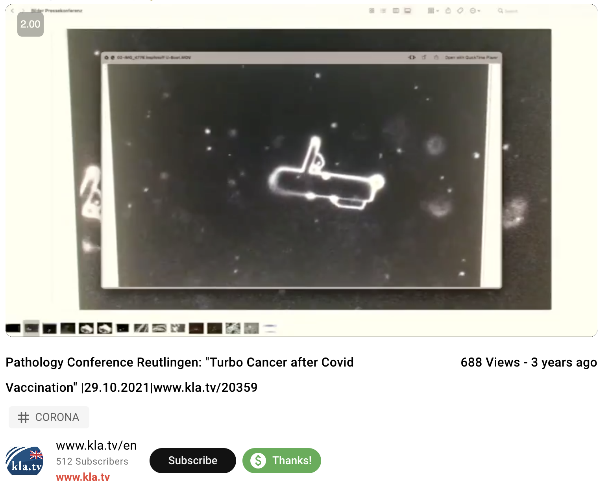
Next Uta Langer showed the image below and said in German "in a different batch of BioNTech we find this, which looks like - well, could be a chip":
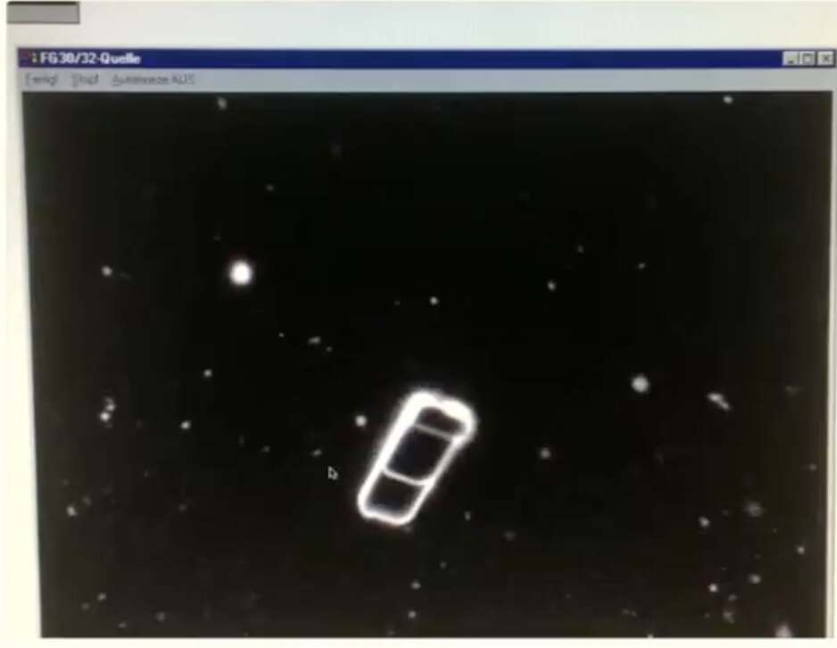
At time 17:45 she showed the following slide and said: "This again Johnson & Johnson, with this little aeroplane-like structure moving. We've seen this plane in many samples, and it always has this shape, so it's not coincidental it has this shape. We've seen it quite often."
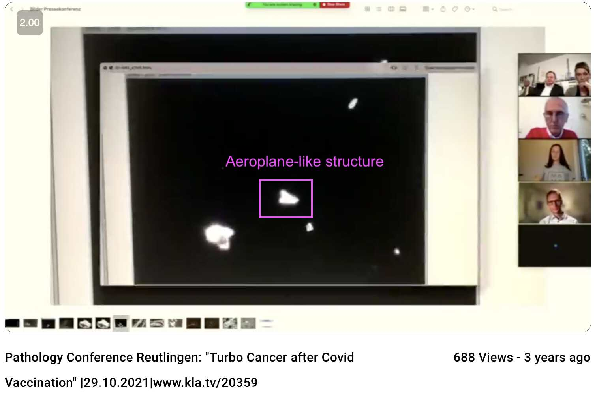
At time 18:28 she showed the slide below and said: "This is blood of a vaccinated person. You can see the money roll phenomenon here [stacking of red blood cells like a roll of coins]. This is not a hair, it's not contamination, we have taken cloth material. It looked like graphene layers, it's very very long. And it's double light shedding. It means that it's a foreign body - maybe the pathologist should explain - it's non-organic. So it's nothing biologic that should be inside the body." Then another person asked "Could this be Morgellons?" And Langer answered "Morgellons - I've seen images shortly after this, it looked like graphene layers. I can't say whether it's Morgellons."
The pathology conference was divided into two parts, where the first part dealt with Burkhardt's autopsy findings and the second part dealt with analysis of microscope images. Videos of both parts with English dubs were posted here: https://odysee.com/@SnakeOilPolitics/Death-by-Vaccination-Part-I-of-the-press-conference-from-the-Institute-of-Pathology-in-Reutlingen-on-the-topic, https://odysee.com/@SnakeOilPolitics/Death-by-Vaccination-Part-II-of-the-press-conference-from-the-Institute-of-Pathology-in-Reutlingen-on-the-topic.
The second part started out with a presentation by Axel Bolland, who runs a quack doctoring practice at a spa where he employs techniques like kirlian photography, homeopathy, bioresonance therapy, and psychosomatic energetics. [https://www.bollants.de/en/natural-medicine/felke-med/concept?item=91ba70e0-1a4f-4184-a18c-658ef29e543d] Ute Krüger also has an alternative medical practice, and she claims she is able to employ energy field technology to detect imbalances in the energy field which is the "non-material part through which body and soul communicate". [https://active-health.se/sv/metod]
At time 8:27 Alex Bolland said this in the English dub: "If we look at the content of the vaccines, of course the spike proteins, mRNA, and graphene oxide - I've seen pictures of that, of groups, of people from Spain - I don't question this, whatever. I'm happy to be called - what do we say - what do you call them - conspiracy theorists, yes. I have also indications that there's mini-robots in the blood. The earliest time I heard of this was in 95 in a presentation from someone who was an expert. So I would say the people who are into this vaccination are 30 years ahead. Thousands of scientists must have worked on this." A bullet point in his slides seemed to also suggest that vaccines contained a parasite called Treponasoma cruzi, even though he didn't discuss the bullet point in his presentation:

At time 33:56 in the second-part, someone called Maria-Hubmer Mogg showed the image below and said: "We don't know what we're looking at here. If we have people experienced in microscopic work - they say, sometimes this could look like a parasite, but this is just the pure vaccine."
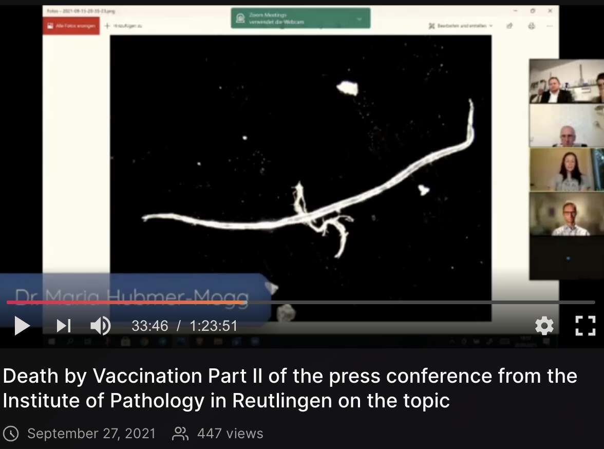
At time 38:25 Maria Hubmer-Mogg said she saw this structure which "looks like a little SIM-card of a cell phone", and she asked what it had to do in a so-called vaccine:
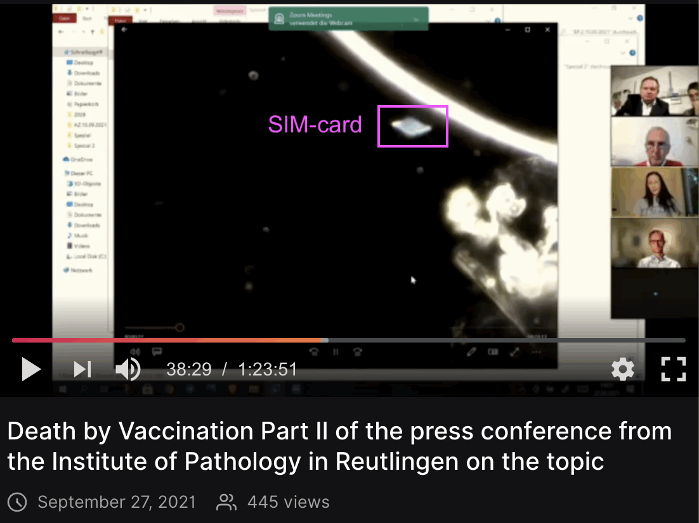
An article about Burkhardt's pathology conference said the following in German: [https://correctiv.org/faktencheck/2021/09/25/mitglieder-der-pathologiekonferenz-verbreiten-unbelegte-behauptungen-ueber-covid-19-impfungen-und-todesfaelle/]
However, it is suspected that neither Burkhardt nor Lang performed autopsies on these people themselves, but had samples and organs sent to them from Germany and Austria. In his lecture, Burkhardt explains (in the video 18:19 to 18:38): "The Austrians were the ones who provided the best specimens and information." One of his main activities was to compile the data: "Because at some point the organs were lying in my possession and I didn't even know what they were for."
Where the samples and organs come from remains unclear, as do the examination methods used.
The team from the German Autopsy Register for Covid-19 Infections complained to CORRECTIV.Faktencheck that the criteria for selecting the cases were "unclear". The entire "method of evaluation" was not comprehensible and there was a lack of information on previous illnesses and other relevant clinical data.
Professional associations describe the results of the "Pathology Conference" as "scientifically unfounded" The result of their investigations, says Burkhardt in the video, is that in five out of ten of the deaths examined, a connection with a vaccination against Covid-19 is "very likely" and in two cases "probable".
The autopsy registry team is also critical of this classification. No reasons were given as to which cases were assigned to which category and why. No "decision criteria" were given for these assignments, and "a causal chain of the cause of death" was not established. There is therefore no evidence that a vaccination against Covid-19 really led to death in the cases examined.
We also asked two associations of pathologists for an assessment of the results. The Federal Association of German Pathologists (BDP) wrote to us: "To our knowledge, the opinions expressed in the video by Professor Burkhardt and Professor Lang are currently neither sufficiently scientifically substantiated nor are they available in a format worthy of comment." Before they are made public, according to the BDP, the results should be presented and discussed in specialist circles on the basis of sufficient data.
The German Society for Pathology (DGP) also writes to us that "the data presented" in the video are "not scientifically based".
During her presentation Uta Langer showed the image below and said "this image was six months after the vaccination, and we see these metal splinters dancing in the blood": [https://odysee.com/@SnakeOilPolitics:3/Death-by-Vaccination-Part-II-of-the-press-conference-from-the-Institute-of-Pathology-in-Reutlingen-on-the-topic:1?t=1232]
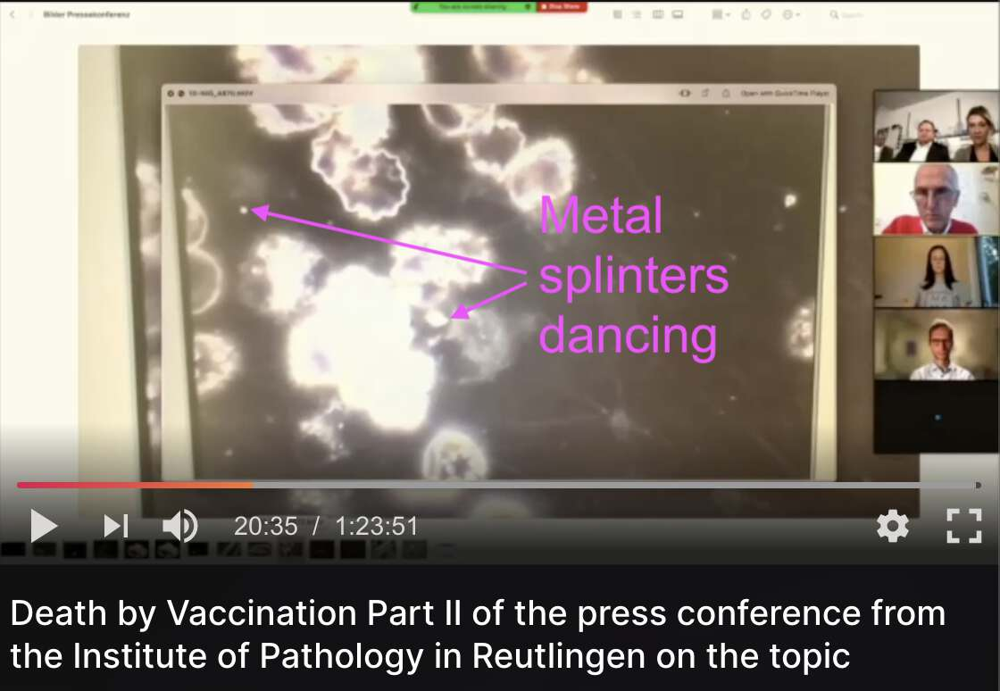
Maria Hubmer-Mogg also said that a vaccine sample contained sharp metallic structures: "As we're seeing here appear, this is metallic structures - I think you see my mouse as well - we see the special specific small color chips without wanting to define what a chip may be. We have these Y-type structures as well. And here again, as we've seen before in the observations, metallic structures, we'd have to decide what that is. And this ring is what we saw here. Also again, a kind of chip-like structure and a bigger metal type of structure. Something that is very pointed and sharp." [https://odysee.com/@SnakeOilPolitics/Death-by-Vaccination-Part-II-of-the-press-conference-from-the-Institute-of-Pathology-in-Reutlingen-on-the-topic?t=1870]
However Burkhardt also claimed that the tissue samples he analyzed contained metallic structures: [https://correctiv.org/faktencheck/2022/01/14/nein-diese-bilder-von-gewebeuntersuchungen-beweisen-nicht-dass-covid-19-impfungen-toedlich-sind/]
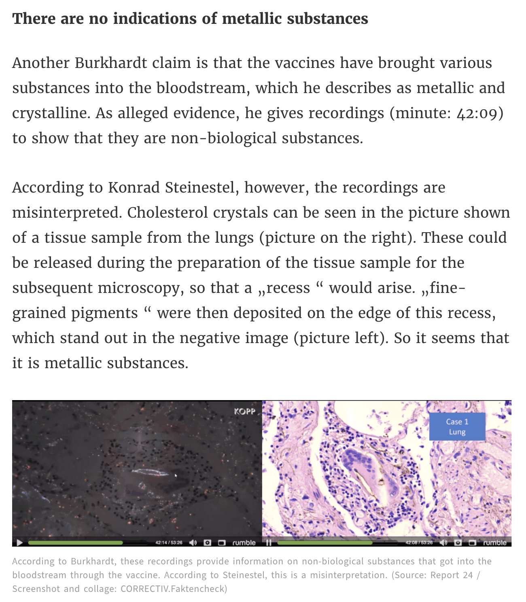
During Burkhardt's pathology conference in September 2021, a German lawyer called Elmar Becker conveyed this anecdote about breast cancer from an anonymous female doctor, who was probably Ute Krüger. Becker said this in the English dub of the video from the conference: "She gave me an example which I'd like to share here anonymously: 'The lady - 70 years old - had breast cancer, and this breast cancer was well under control, and it didn't grow anymore' - I have to note here that with elderly people cancer does not grow as quick as fast as with younger people - now the lady was vaccinated, and the colleague told me, 'after six weeks this tumor - this breast cancer - started to grow again. In the end it had to be - undergo surgery after six months because it had exploded. It had a starting size of 1-1-1 in the three dimensions. After about three months it was 14-14 and when it was removed after six months - so you see how telescoped things are here - it was 16-16-16.' So with me that raised the question, can it be that this is in the context of the vaccination, and could it be that in the the question discussed in the literature or now by immune suppression plays a role. I would like to look at this question with Dr. Bolland, and maybe you could explain to us what you have found in blood examinations, and how you could explain certain possible context and correlations - when correlated to what I would call turbo cancer - of course medically not quite correct - but impressive and clear." [https://odysee.com/@SnakeOilPolitics/Death-by-Vaccination-Part-II-of-the-press-conference-from-the-Institute-of-Pathology-in-Reutlingen-on-the-topic?start=107] So I believe that may have been the first ever public use of the term "turbo cancer" in a vaccine-related context (or "turbokrebs" in the original German version).
At time 59:54, Elmar Becker said: "We are moving into this project now to look at this phenomenon of the turbo cancer, which is not proven yet, but where we have to move into an observation study, now, scientifically. I've been coached by a university who will accompany this, we have a research design, and we're carrying on."
An article about turbo cancer in a German wiki said that the "author of the term is a lawyer named Elmar Becker (member of Lawyers for Enlightenment), who used the term at a pathology conference". [https://www.psiram.com/de/index.php/Turbokrebs]
The organization Anwälte für Aufklärung ("Lawyers for Enlightenment" or "Lawyers for Clarification") was co-founded by the German lawyers Gordon Pankalla and Reiner Füllmich. It's interesting that Gordon Pankalla has an English name, because Reiner Füllmich and Sucharit Bhakdi have both lived in the United States, and in general people in the non-English-speaking alternative media often seem to have a connection to English-speaking countries.
In 2021 Lawyers for Enlightenment organized a "secret project meeting" which also included two people from Kla.TV: [https://www.psiram.com/de/index.php/Anwälte_für_Aufklärung]
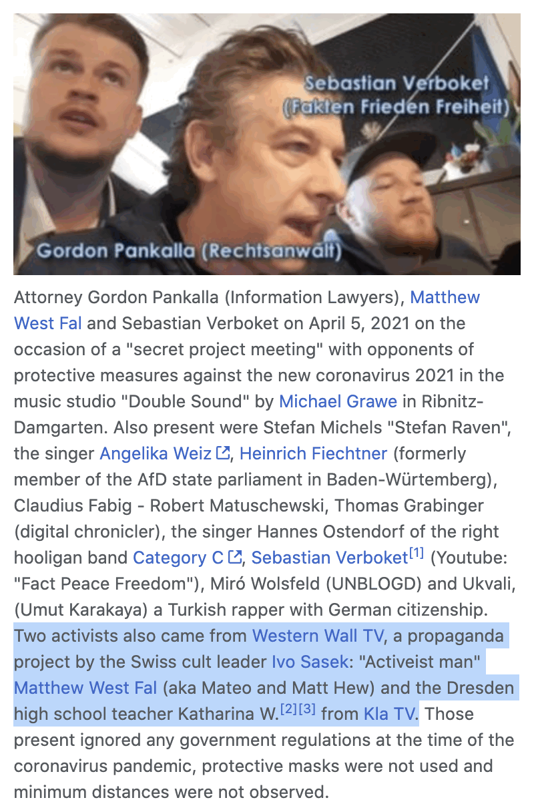
The term "turbo cancer" seems to have been introduced during Arne Burkhardt's pathology conference in September 2021. When people from the Federal Association of German Pathologists were asked to comment on the findings presented in Burkhardt's conference, they answered that the findings presented in the conference were not "available in a format worthy of comment", and they requested that the findings should be "presented and discussed in specialist circles on the basis of sufficient data". [https://correctiv.org/faktencheck/2021/09/25/mitglieder-der-pathologiekonferenz-verbreiten-unbelegte-behauptungen-ueber-covid-19-impfungen-und-todesfaelle/]
On the website of Burkhardt's conference, I didn't see any scientific publication about their findings, but only videos, Powerpoint slides, and a press release. [https://pathologie-konferenz.de/Tod_nach_COVID-19-Impfung_www_pathologie-konferenz_de.pdf] In fact I didn't find any scientific paper published by Burkhardt since 2012. [https://scholar.google.com/scholar?as_vis=1&q=arne+burkhardt, https://www.researchgate.net/scientific-contributions/Arne-Burkhardt-59108104]
In December 2021 Arne Burkhardt and Sucharit Bhakdi did a presentation about Burkhardt's findings for Bhakdi's organization Doctors for COVID Ethics, and Bhakdi and Burkhardt and also coauthored a short 4-page article about their presentation. But the article contained little details and it was not structured like a scientific paper. [https://doctors4covidethics.org/wp-content/uploads/2021/12/end-covax.pdf]
The paper by Bhakdi and Burkhardt featured a table of 15 cases of people who are suspected to have died due to vaccination. But one of the people is supposed to have been 95 years old and died 68 days after vaccination, and another person is supposed to have been 89 years old and died 6 months after vaccination:
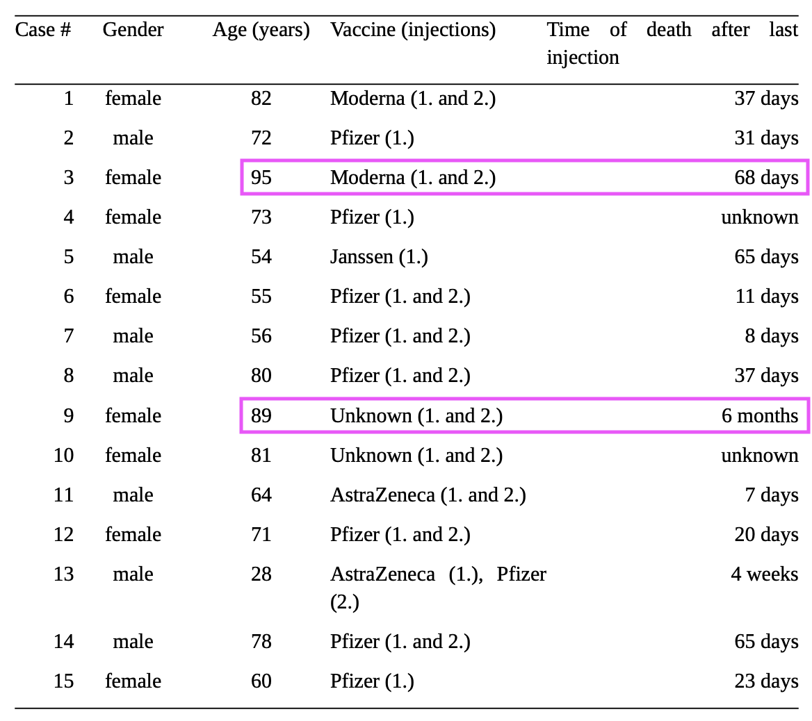
Bhakdi and Burkhardt wrote: "Because vaccination was the single common denominator between all cases, there can be no doubt that it was the trigger of self-destruction in these deceased individuals." But how can they know that the death of the 89-year old who died about 6 months after vaccination was triggered by vaccination? They didn't provide a detailed description of any of the cases or any case-by-case reasoning of why they attributed each death to vaccination. And the authors wrote that they selected the 15 cases they analyzed because they were people who had died after vaccination, so it's not very surprising that vaccination would've been a "common denominator between all cases".
Bhakdi and Burkhardt also wrote: "Not a single death was brought into any possible association with the vaccination by the coroner or the public prosecutor; this association was only established by our autopsy findings." So it seems Burkhardt's attribution of the deaths to vaccination is not necessarily supported by other lines of evidence. However it's not clear if the autopsies were originally peformed for the purpose of determining whether the deaths were due to vaccination or not, or if the coroners even looked for evidence that the deaths were caused by vaccination.
The main reason why Burkhardt attributed the deaths to vaccination seems to have been that the tissues he examined had a high concentration of t-lymphocytes, which are a type of white blood cells. However Correktiv wrote: "The team of the autopsy register also told us that the pictures were misinterpreted. Many showed collections of lymphocytes, 'as they would be found in many post-mortem cases'. Benjamin Ondruschka, director of the Institute for Forensic Medicine at the University Hospital Hamburg-Eppendorf, made a similar statement in September 2021 to Die Welt with a view of pictures of the heart."
The article by Die Welt was behind a paywall, but it was copied here: https://kampfschmuser.de/t/coronavirus-keine-ansteckungsgefahr-fuer-haustiere.161043/page-1092#post-4240360. The article also said:
Professor Benjamin Ondruschka, Director of the Institute of Forensic Medicine at the University Medical Center Hamburg-Eppendorf, watched the lecture. He watched the press conference with two experienced colleagues - but had trouble following. "It wasn't clear to me exactly what the two of them were talking about until the end," he says. "They didn't say where they got these samples or preparations from, whether they were slides that had been presented to them by other pathologists or forensic doctors for a second opinion, whether they were particularly difficult cases, whether the patients had shown symptoms during their lifetime. But that is really important for the assessment. The cases seemed to be very heterogeneous, in some cases with time intervals of several months between vaccination and death."
The tissue images presented during the press conference also do not convince Ondruschka that there is a vaccination scandal. "In one image, for example, we saw isolated inflammatory cells in the heart muscle," he says. "But such a small finding doesn't kill you. Such individual cells are always found in tissue sections. Even if you were to take a blood sample from me now, it would contain white blood cells (lymphocytes). They belong in the blood."
Burkhardt's presentation was part of a symposium by Doctors for COVID Ethics and it was livestreamed by UK Column, but I think both Doctors for COVID Ethics and UK Column are controlled opposition
Another symposium by Doctors for COVID Ethics featured a presentation by Shimon Yanowitz. [https://rumble.com/v2v3jix-shimon-yanowitz.html] During an interview he did with Sasha Latypova, he said that his blood contained an entity that might have been Morgellons, and that looked very mean and made red blood cells nervous: [pfizerstew.html#Links_of_Latypova_and_Kingston_to_Stew_Peters_and_Jane_Ruby]
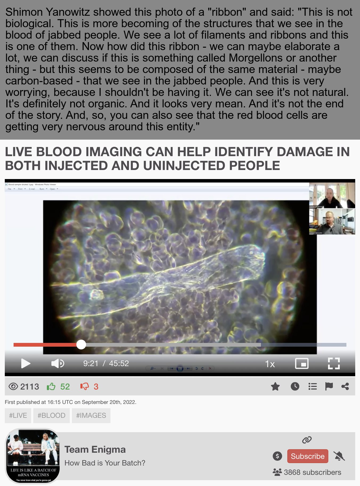
Another symposium by Doctors for COVID Ethics featured a presentation by Daniel Broudy, Valerie Kyrie, and David Hughes. The thumbnail of their presentation featured an image of a supposed microchip-like structure in a COVID vaccine: [https://rumble.com/v27e1tq-d4ce-5th-symposium-the-psychology-of-covid-19-atrocities-upated.html]
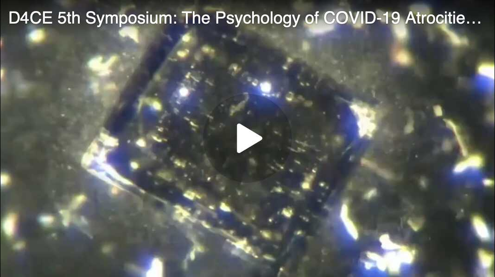
Broudy, Kyrie, and Hughes have all published papers in the journal IJTVPR where they claimed COVID vaccines contained nanotechnology. [pfizerstew.html#Paper_about_nanotechnology_in_COVID_vaccines_by_Young_Mi_Lee_and_Daniel_Broudy] Valerie Kyrie's bio says: "With a PhD in Experimental Psychology, Masters in Clinical Psychology, Kyrie is working in the areas of political psychology, the psychology of atrocity, and psychological operations / perception management. Her doctorate in psychology focused on the topic of reality-perception and its manipulation." [https://ijvtpr.com/index.php/IJVTPR/article/view/49, https://ijvtpr.com/index.php/IJVTPR/article/view/32] Daniel Broudy wrote that he is a "former Army intelligence analyst", and his bio says: "As a former imagery analyst with the U.S. Army, he draws upon his military experience and doctoral training in psycholinguistics to develop courses in communication and the rhetoric of the visual. His research focuses on systems and techniques of mass manipulation in state and corporate public relations." [https://apjjf.org/daniel-broudy_1372862042, https://apjjf.org/daniel-broudy_1372862042] The bio of David Hughes says that his areas of research include "psychological warfare" and "the class relations between psychological operations". [https://propagandainfocus.com/our-team/] A paper by David Hughes featured La Quinta Columna's images of self-assembling nanotechnology and Carrie Madej's images of hydras and Morgellons-like fibers: [https://ijvtpr.com/index.php/IJVTPR/article/view/52/288]
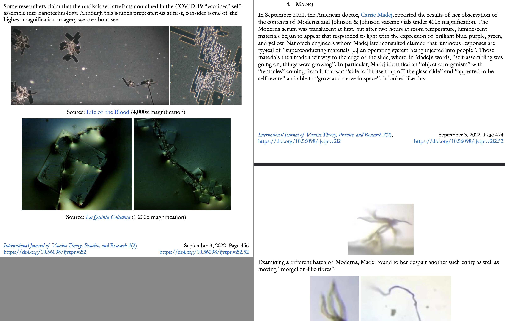
At Odysee the oldest result for the search term "turbo cancer" was a video of Burkhardt's pathology conference that was posted by KLA.tv in October 2021. The second-oldest video was a presentation by Sucharit Bhakdi from Burkhardt's second pathology conference which was held in December 2021. The next five results were videos of the German pathologist Ute Krüger: [https://odysee.com/$/search?q=%22turbo%20cancer%22]
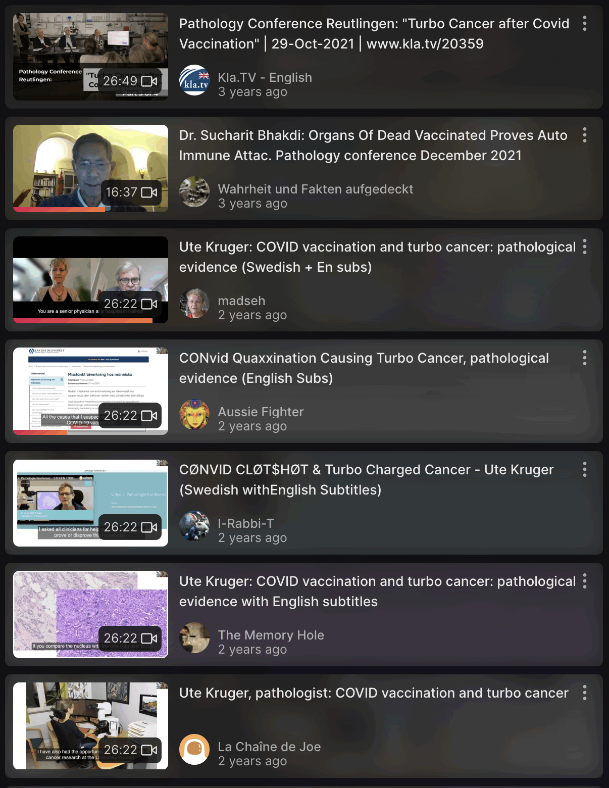
Ute Krüger lives in Sweden, but she speaks Swedish with a heavy German accent. She was not a speaker in Burkhardt's first pathology conference which seems to have introduced the concept of "turbo cancer" to the world, even though she somehow emerged as one of the early experts on turbo cancer in alt media. However she was a speaker at Burkhardt's second pathology conference which was held in December 2021. [https://pathologie-konferenz.de/PM%202.%20Pathologie-Konferenz%20final-online.pdf]
Ute Krüger's website says this in Swedish: "Between 2015-2023, I worked as a senior physician in Clinical Pathology at Kalmar County Hospital while also being a senior physician at the Institute of Clinical Sciences at Lund University." [https://active-health.se/sv/om] But next it says: "In recent years I have taken several courses on diet and lifestyle, herbal medicine, orthomolecular medicine, parasites, live blood analysis, energy medicine, Ayurveda and Reiki." Her website also says this in Swedish: "I work with information field technology. The information field is seen as the non-material part through which body and soul communicate. With this technology, I can detect imbalances in the information field that can affect people in all life situations. These imbalances often have invisible causes and are stress-related or caused by emotional blockages. These imbalances can be harmonized and thus help the body to heal." [https://active-health.se/sv/metod] She is probably lying when she claims that she has access to technology which is able to analyze the "information field" which is "the non-material part through which body and soul communicate".
The Swedish word for "information field technology" on her website was "informationsfältsteknologin". Her website was the only hit for the Swedish word on Google search. But it might refer to this: [https://timewaver.com/international/en/the-information-field/]
The so-called Information Field is originally part of a unified field theory, formulated by German physicist Burkhard Heim (a student of Werner Heisenberg) in the late 1970s. Heim had thereby pursued a task at which many renowned physicists, for example Albert Einstein or Stephen Hawking, had so far ultimately failed.
Burkhard Heim's field theory is based on a world view comprising 12 dimensions. In Burkhard Heim's model, the Information Field is localized in the 7th and 8th dimensions. Its meaning goes far beyond physics: It is the level of our existence where all answers to all questions are stored, our predetermination and all knowledge.
TimeWaver technology is based on the theory that the essence and function of the Information Field can be purposefully applied by those who are familiar with it. It is about retrieving all the information about a person's mind and body that is stored in the Information Field of the Earth and the Universe; the positive as well as the negative, the strengths as well as the weaknesses, the normalities as well as the abnormalities.
In October 2024 a German newspaper published a reader-contributed article by Ute Krüger about turbo cancer. [https://www.berliner-zeitung.de/open-source/corona-impfstoffe-pathologin-warnt-diese-mrna-technik-ist-nicht-ausreichend-getestet-li.2259438] The main form of turbo cancer she focused on was breast cancer in young women.
However as evidence that there had been an increase in breast cancer in young women, she cited phony analysis by Ed Dowd's group Phinance Technologies. She wrote this in German: "A study from the UK in October 2023 examined the cancer mortality rate of 15- to 44-year-olds. These are very young people for whom cancer has previously been a rare cause of death. It was found that there was a 28 percent increase in cancer deaths from breast cancer in women in 2022. Even more alarming figures were found for pancreatic cancer: there was an 80 percent increase in deaths for women and 60 percent for men. In addition, a 120 percent increase in deaths for men caused by black skin cancer (melanoma) was found." But the reason why Dowd's group found an increase in cancer deaths in 2022 was that they used an incorrect method to add in deaths they thought were missing because of a registration delay, because they assumed that cancer deaths had the same proportion of missing deaths as the overall proportion of missing deaths for all causes, even though in reality cancer deaths have a much shorter registration delay than deaths from external causes, and Dowd's group looked at cancer deaths in ages 15 to 44 where a large part of all deaths are due to external causes. [https://x.com/UncleJo46902375/status/1783797036749402598]
The German newspaper later published a response to Ute Krüger's article. They pointed out that her anecdotal claim of a rise in turbo cancer was not supported by actual cancer statistics: [https://www.berliner-zeitung.de/gesundheit-oekologie/corona-impfstoffe-und-turbo-krebs-was-die-fallzahlen-aus-deutschland-verraten-li.2262993]
The cancer registry shows that for a decade, between 72,600 and 75,6000 women in Germany have been diagnosed with breast cancer each year. In 2022, around 74,500 women in Germany received the news that they had the disease.
[...]
The number of breast cancer diagnoses is not increasing among younger women either. Around 11,000 women between the ages of 30 and 49 in Germany are diagnosed with breast cancer for the first time every year. The number has been stable for many years - and it remained stable in 2021 and 2022.
[...]
However, whether the risk of dying from breast cancer is increasing for individual patients can be better determined using the so-called age-standardized mortality rate. How many patients out of 100,000 do not survive their disease in a year? In 2018, the figure was 12.4 out of 100,000, and in 2023 - after the pandemic and vaccination campaign - only 11.5 out of 100,000 died.
The same applies to all types of cancer taken together: the absolute number of cases has been rising slightly for years. But if you take into account the ageing of society, the mortality rate is falling continuously, most recently from 147.6 per 100,000 cancer patients in 2018 to 137.5 per 100,000 in 2023.
[...]
At the request of the Berliner Zeitung, the Center for Cancer Registry Data therefore looked even deeper into the figures and, in addition to the registry data and the cause of death statistics, also evaluated the hospital data, particularly on breast cancer.
Here, too, the German data show no development that gives cause for concern: "We find no evidence of a higher incidence, a higher mortality rate or an increased aggressive tumor behavior that could be linked to the vaccination," says Klaus Kraywinkel, head of the center.
The proportion of women with a poorly differentiated - i.e. particularly malignant - tumor was a good 29 percent of all breast cancer patients in the years 2018 to 2020. In 2021 and 2022 it even fell slightly, to just over 28 percent. Poor differentiation could be an indicator of particularly aggressive growth. So far, here too: all clear.
The picture did not change in terms of the diagnosed tumor sizes either. In 2018, doctors classified the tumor in six percent of the affected women as being in the "T3" category and in seven percent as being in the "T4" category - these are the two largest types of tumor. In the following years, these proportions remained unchanged - including in 2022.
When I searched for the earliest tweets that matched the term "turbo cancer", many of the oldest tweets I found that connected the term to COVID vaccines referred to Burkhardt's pathology conference. The oldest tweet was posted a few hours after the conference by Bobby Rajesh Malhotra, who has done a lot of research exposing Füllmich as controlled opposition: [https://x.com/search?q=%22turbo%20cancer%22%20until%3A2021-11-1&f=live]
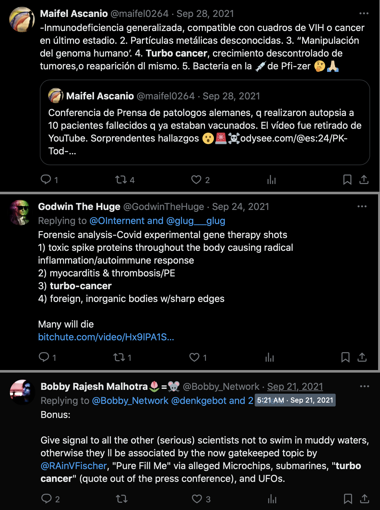
The German word for turbo cancer is "turbokrebs". The two earliest tweets I found which used the term in a context related to COVID vaccines were posted on September 27th UTC, and both tweets referred to Arne Burkhardt. [https://x.com/search?q=turbokrebs%20until%3A2021-10-1&f=live] Multiple early tweets that featured the word "turbokrebs" linked to an article from October 2021 which said this in German: "If someone else wonders how the 'turbo cancer' came to its name, one can refer to a pathologist press conference here. Pathology conference • Results of post-mortem and vaccine analysis ... [Report24]. It was there that this observation was discussed and a possible connection with the so-called vaccinations was discussed." [https://qpress.de/2021/10/30/turbokrebs-raritaet-oder-begleiterscheinung/]
Some of the very earliest tweets about turbo cancer were posted by accounts that promote Miles Guo, which are likely bots:
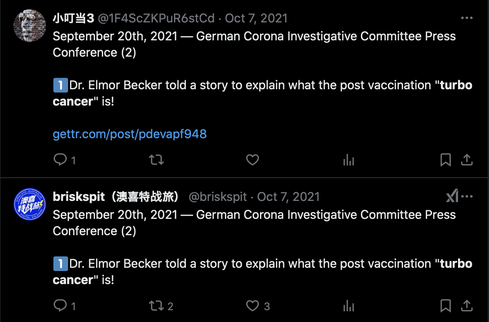
One reason why many of the accounts that promote Miles Guo seem like bots is that they post tweets in multiple different languages. For example the top right account in the screenshot above tweets in a mixture of Chinese, Japanese, and English. [https://x.com/HJapanGalaxyII]
The top left account mostly tweets in English and Chinese, but sometimes it has also tweeted in Italian or Spanish: [https://x.com/search?q=from%3A1F4ScZKPuR6stCd+%28lang:it+OR+lang:es%29&f=live]
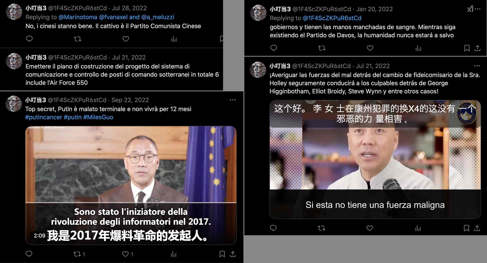
The bottom right account mostly tweets in English and Chinese, but it has sometimes randomly posted tweets in Italian, French, or Spanish:
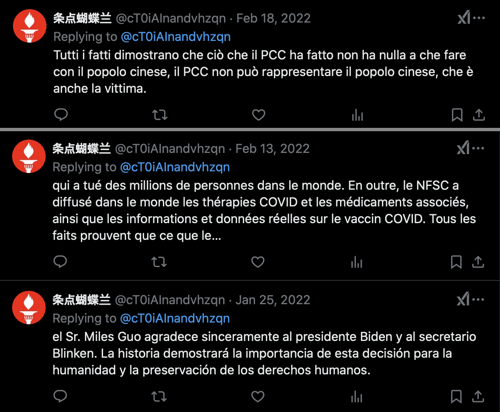
Several early tweets about turbo cancer referred to Ryan Cole, who is a pathologist just like Arne Burkhardt, Ute Krüger, and Clare Craig (even though he is a dermatological pathologist and not a cancer pathologist like Krüger and Craig): [https://x.com/KatharinaHauffe/status/1474870404070219776, https://x.com/SitSilver/status/1474776636327399434, https://x.com/brendadelriom/status/1486542769137008640, https://x.com/IsraelVazquezA2/status/1490771583149002757]
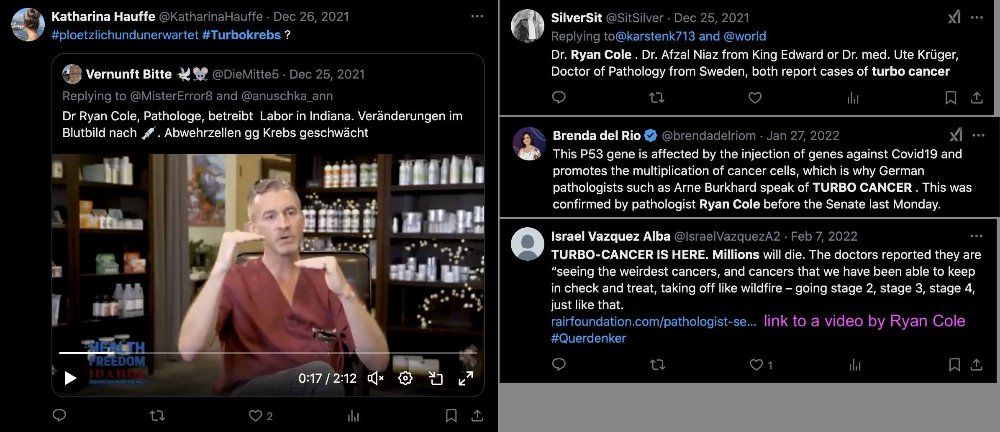
In 2021 before the term "turbo cancer" was in common use, Ryan Cole was already saying that he was seeing a 20-fold increase in endometrial cancers, and that cancer was now "accelerated" so that it progressed to an advanced stage faster than earlier: [https://x.com/search?q=%22ryan+cole%22+cancer+until%3A2022-1-1&f=live]
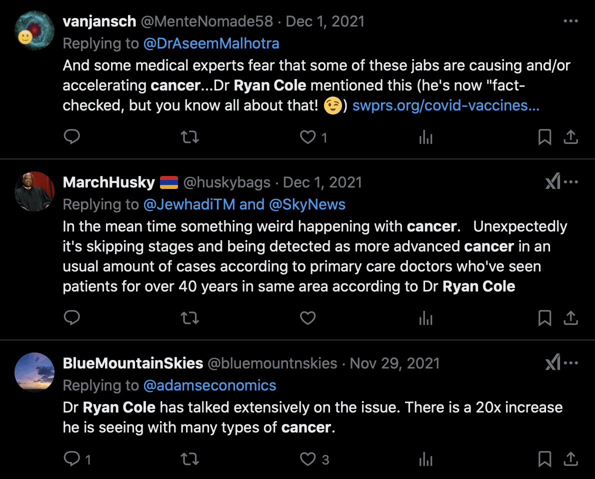
Accounts that promote Miles Guo also posted videos by Cole on Twitter:
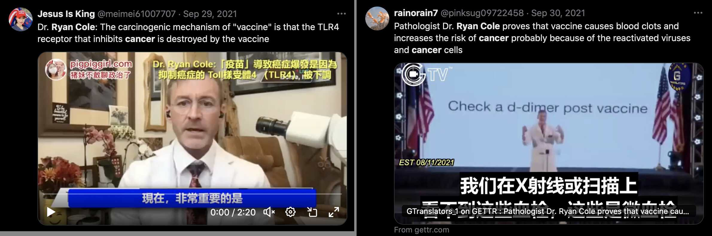
On September 24th 2021 UTC which was only 4 days after Burkhardt's pathology conference, Del Bigtree published an interview with Ryan Cole where Cole said vaccines cause cancer, and he said: "I'll have a call later with three German pathologists. They're seeing similar signals. They're gonna be working on it as well. But it's based -. Another colleague in Dallas is gonna be working on it. We're trying to get a consortium of doctors together to study this." [https://rumble.com/vrnol2-dr%2e-ryan-cole-is-there-a-covid-vaccine-cancer-connection.html?start=917, 15:17]
Ryan Cole's colleague in Dallas probably referred to the oncologist Ray Page. When I searched Twitter for "turbokrebs", one of the earliest tweets I found was a clip of a presentation by Ray Page from a conference in Texas. The bottom of the video said NTD.COM which is the website of Falun Gong's media outlet New Tang Dynasty: [https://x.com/DieechteBecky/status/1464354134010830857]
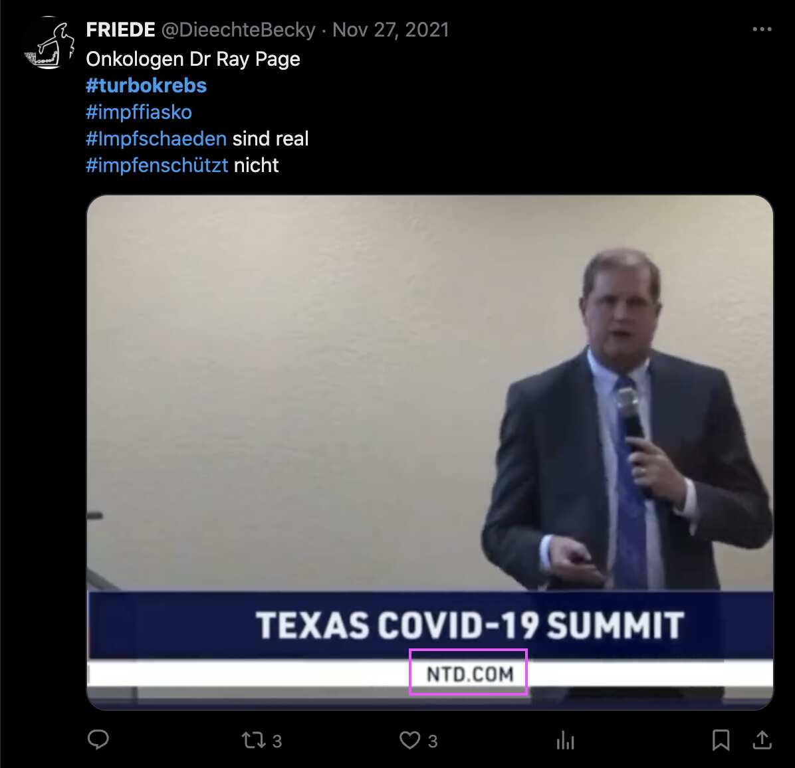
The Texas conference was livestreamed on the YouTube channel of Epoch Times. Other speakers in the conference included Peter McCullough, Ryan Cole, and Bryan Ardis. The presentation by Ray Page was actually fairly reasonable, and he didn't make the kind of wild claims like Ryan Cole who was saying there was a 10-to-20-fold increase in certain types of cancer. Ray Page said: "So the question of whether this can cause cancer or not: Dr Cole as a pathologist has seen a lot of signals in his his practice looking at the pathologic features. We know that viruses can cause cancer, you know the Epstein-Barr, herpes virus HIV, human papilloma virus, and we even have some vaccines that can potentially mitigate some of that. But there's potential laboratory signals that are suggesting that there's interactions with these spike proteins with certain cancer genes, which has the possibility to cause or accelerate cancer. Now I haven't seen that clinically yet and I haven't seen a lot of clinical data with that yet, but I think we need to really keep our eyes open." [https://www.youtube.com/watch?v=5gzEuYRKdJY&t=1h26m39s] So Ray Page seems to have referred to Ryan Cole as a source of the theory that vaccines may have caused or accelerated cancer, but Page said he had not yet seen an increase in cancer himself.
I found a German article dated October 4th 2021 that said there were "numerous reports of explosive cancer after covid-19 vaccination". It said that the term "turbo cancer" was coined at the Germany pathology conference: [https://report24.news/zahlreiche-berichte-von-explosivem-krebsgeschehen-nach-covid-19-impfung/]
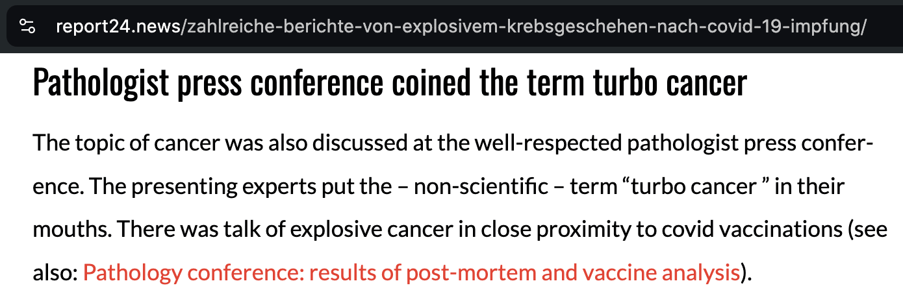
The same German article cited Ryan Cole as a source that COVID vaccines had caused an increase in cancer:
Dr. Ryan Cole has spoken several times about cancer after vaccinations. There are recordings here at video press or at Brighteon.com. We have transcribed one of his statements and would like to translate them for you:
And very importantly, and this goes to that question of all these anecdotes that we're hearing from different oncologists around the country and the world. Literally, I got a very interesting note from a family doc that's been in Ireland for 40 years. He knows this community, knows his patients. And he said, Hey, you know, a lot of my patients are getting the shot. Some aren't. But in those that are. And then he listed the number of cancers he's seen in a six week period of time that he's never seen in a 40 year career. And so he he asked what could be causing that. So I sent him that paper as a potential mechanism because that toll like receptor number four is critical and in the micro environment to keep cancers at check in check. So I was talking to Harvey Risch, the world renowned epidemiologist. He said, Well, you know, post a shot or a therapy, it's usually going to be 5, 10 years till we see these signals. And I said, yeah, usually it would be. But when we have something we've never done before, that's suddenly suppressing one of these receptors that's highly, highly responsible for keeping cancers in check. It would be very explicable as to why something that is quiescent all of a sudden wakes up. So, I mean, all day long, our cells are fighting off mutations in different cells. If they see the mutation, they'll try to kill that cell. If this receptor is downregulated, then all those downstream molecules inside that cell that's fighting there, it can't fight because those signals are now turned off the cytokines, the interferons, the things that will attack that atypical cell. So we're seeing the early signals of this. And so that's what's concerning is we want to be able to know under the microscope. You know, here's a whole stack of tumors in the last couple of weeks where what am I doing with this? I'm looking at the ratios of the helper T cells, the CD8 killer T cells, and then we'll be staining these for all these toll like receptors as well. Because in some of these patients, again inexplicable cancers that are really unusual ages that are really thick cancers and really aggressive cancers compared to what we are used to seeing in the lab.
In July 2021 Ryan Cole became a "Medical Director" of the Jew Simone Gold's organization America's Frontline Doctors. The news team of America's Frontline Doctors is ran out of Israel by Mordechai Sones, who also hosts their podcast. [https://reinettesenumsfoghornexpress.substack.com/p/americas-frontline-doctors-all-roads] He is a Kahanist Chabanik who read out a letter from the Rebbe Menachem Mendel Schneerson in one episode of their podcast. [https://soundcloud.com/aflds/letter-on-science-and-torah] Before COVID he worked for Israeli mainstream media, and in the 80s he worked on "research in areas of how to upgade CIA covert arms pipeline to Afghans": [https://www.linkedin.com/in/mordechai-sones-bab8b916/]
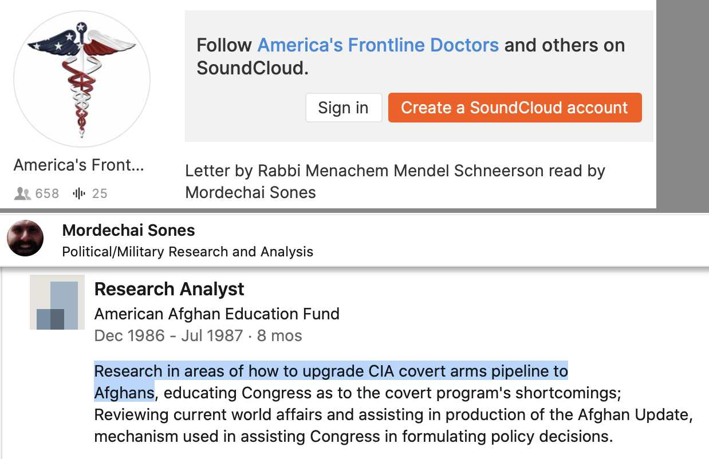
AFLDS was also affiliated with a telehealth website called SpeakWithAnMD.com that was launched by Jerome Corsi in March 2020. A report on the website said: "America's Frontline Doctors (AFLDS) - a leading purveyor of coronavirus misinformation - refers patients to SpeakWithAnMD.com, stating that SpeakWithAnMD.com provides phone consultations with 'AFLDS-trained physicians' willing to prescribe hydroxychloroquine, ivermectin, and other unproven treatments. According to recent reports, AFLDS referred over 255,000 individuals to SpeakWithAnMD.com between July 16, 2021, and September 12, 2021 - approximately 72,000 of whom paid $90 for initial phone consultations and many of whom had follow-up consultations for an additional $60." [https://coronavirus-democrats-oversight.house.gov/sites/evo-subsites/coronavirus-democrats-oversight.house.gov/files/2021.10.29+Lettrer+to+SpeakWithAnMD+re+Misinformation.pdf] Jerome Corsi has managed two mutual funds for B'nai B'rith, and in 2004 he told the Forward "I've been a strong supporter of B'nai B'rith and Jewish causes for 30 years". [https://forward.com/news/5291/campaign-confidential-58/]
One of the charges brought against Cole which led to his medical license being revoked was that Cole had prescribed ivermectin at MyFreeDoctor.com without obtaining proper informed consent: "Beginning in June 2021, the Respondent provided direct care to several patients via telemedicine using the website MyFreeDoctor.com. This involved a virtual platform that relied on instant message chat instead of a phone call or video; thus, the Respondent could neither see nor hear the patients. A disclaimer on the platform stated that ivermectin was not approved by the FDA, but that evidence supported its use. [...] The Respondent did not document a detailed history or an appropriate medical decision-making process for Patient B. The Respondent did not document a sufficient rationale for prescribing the medication he prescribed. The Respondent did not document that he obtained informed consent from Patient B for this treatment or warn Patient B that the virtual platform they were using did not allow for an informed diagnosis." [https://lymescience.org/rogues/Ryan-Cole/Ryan-Neil-Cole-charges-and-findings-of-unprofessional-conduct-WA-2024.pdf]
In October 2021 Mike Adams published an article titled "THE VACCINE-CANCER ATROCITY: Like clockwork, most vaccinated Americans will lose immune function by Christmas and start growing accelerated CANCER tumors that will kill them over the next ten years". [https://www.naturalnews.com/2021-10-29-the-vaccine-cancer-atrocity-like-clockwork-most-vaccinated-americans-will-lose-immune-function-by-christmas-and-start-growing-accelerated-cancer-tumors-that-will-kill-them-over-the-next-ten-years.html] He cited Ryan Cole as a source that there had been an increase in cancer:
In Idaho, Dr. Ryan Cole, a diagnostics lab owner, is already reporting a 2000% increase in cancers among those who took the vaccines. "Since January 1, in the laboratory, I'm seeing a 20-times increase of endometrial cancers over what I see on an annual basis," Cole stated in the video. "I'm not exaggerating at all because I look at my numbers year over year, and I'm like 'Gosh, I've never seen this many endometrial cancers before.'"
Watch Dr. Ryan Cole explain all this in his own words via this Brighteon video:
https://rumble.com/vofwd9-is-the-vaccine-destroying-the-immune-system-dr-ryan-cole-md.html?mref=9qiox&mc=7i756In children, post-vaccine cancers will take longer to develop, so they may evade cancer death for many years. But in adults who are already growing micro tumors - and nearly everyone is already doing that - the loss of immune function will result in the rapid acceleration and spread of cancer, overwhelming their bodies in a matter of a few months to a few years, depending on their health status when the vaccines were first injected.
The article by Mike Adams was copied on many different websites: [https://x.com/search?q=accelerated%20cancer%20vaccine%20until%3A2022-1-1&f=live]
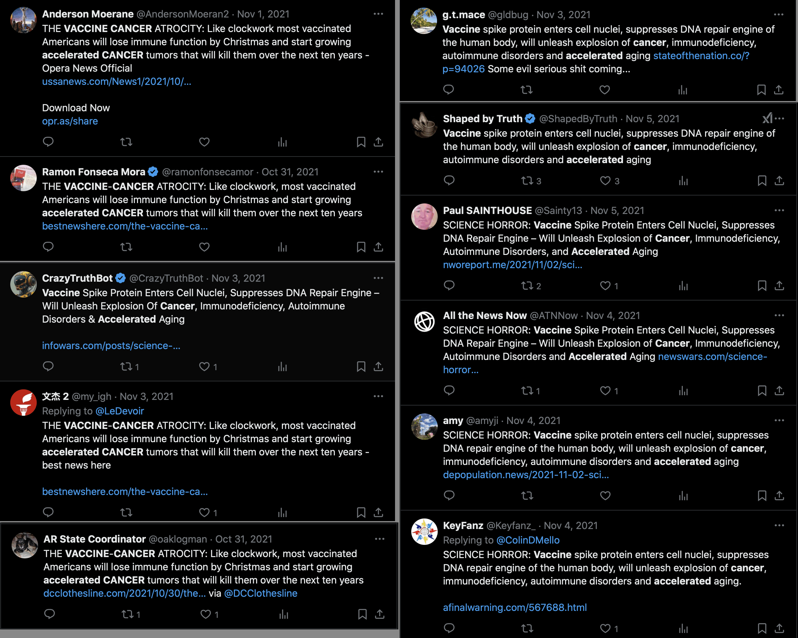
The article by Mike Adams said that "most vaccinated Americans will lose immune function by Christmas". He referred to an article by Expose News that had been published three weeks earlier, which said: "UK PHE Vaccine Surveillance Report figures on Covid cases show that doubly vaccinated 40-70 year olds have lost 40% of their immune system capability compared to unvaccinated people. Their immune systems are deteriorating at around 5% per week (between 2.7% and 8.7%). If this continues then 30-50 year olds will have 100% immune system degradation, zero viral defence by Christmas and all doubly vaccinated people over 30 will have lost their immune systems by March next year." [https://expose-news.com/2021/10/10/comparison-reports-proves-vaccinated-developing-ade/] The article by Expose News was copy pasted by Robert Malone on Twitter in November 2024, but he didn't even link to the original source of the article, and his tweet said the article was from 2024 even though actually it was from 2021. [https://threadreaderapp.com/thread/1856845869452029969] (Malone or whoever runs his account later deleted the tweet, but his tweet was still a great demonstration of the journalistic standards of the so-called medical freedom movement.)
Mike Adams also has connections to Scientology like Reiner Füllmich and Ivo Sasek. The Citizens Commission on Human Rights is an anti-psychiatry organization that was founded by the Church of Scientology, but at one point the featured video on their YouTube channel was a documentary by Mike Adams. [https://www.youtube.com/watch?v=sHC2wH_iGYM] In 2011 CCHR republished an article by Mike Adams about how Jim Marrs had received the NaturalNews 2011 Book Of The Year Award. [https://www.cchrint.org/2011/09/07/naturalnews-names-award-winner-for-2011-jim-marrs/] The article mentioned that both Mike Adams and Jim Marrs had also won a "CCHR Human Rights Award". In 2006 Mike Adams wrote: "Want to learn more shocking facts about modern psychiatry? Visit the Citizens Commission on Human Rights. It's a grassroots organization that fights against the evils of psychiatry and Big Pharma. It was originally set up by the Church of Scientology. I'm not a member of the church, but on this issue I agree with them completely: Psychiatry has gone mad, and it must be stopped." [https://www.naturalnews.com/counterthink/Modern-Psychiatry.html] In 2006 Mike Adams published a short article which only consisted of this text: "Tom Cruise recently lent his support to the Church of Scientology's New York Rescue Workers Detoxification Project, which claims to remove toxins from the lungs of 9/11 emergency workers." [https://www.naturalnews.com/016825_project_Tom_Cruise_detox.html] In 2007 Mike Adams wrote about the history of tyranny by the FDA, where he wrote that the FDA tried to unfairly regulate the use of E-meters: "In the early 1960s, the FDA got word of something it didn't like: The Church of Scientology was helping its members overcome mental problems with the use of a simple biofeedback device called the E-meter. With the market for psychotropic drugs so consistently profitable, and with Scientology gaining momentum in helping millions of people overcome severe emotional and mental problems, this E-meter had to be taken out of play... and fast!" [https://www.naturalnews.com/021791.html] In 2009 Mike Adams wrote: "I personally am not a member of Scientology, but I have read parts of the texts of almost every major world religion (translated into English, of course), including some of the works of L. Ron Hubbard, who was by any account a brilliant and highly prolific writer. My own interests span many religions." [https://www.naturalnews.com/027179_john_travolta_vaccines_who.html] In 2010 Natural News linked to a Breitbart article titled "Scientologists use therapeutic touch to help Haiti victims", which said that a victim of the Haiti earthquake didn't have to get his leg amputated because his leg was touched by a Scientologist energy healer. [https://www.naturalnews.com/headlinesnews.html, http://web.archive.org/web/20100126072821/http://www.breitbart.com/article.php?id=CNG.4e601264cbdad356a9d677659aa5919c.51&show_article=1]
On January 1st 2020 UTC Alex Jones did a special episode of InfoWars that was focused around the theme of vaccines and viruses. First the fake Google whistleblower Zach Vorhies did a long presentation about the measles outbreak in Samoa in 2019. Alex Jones said that he and Rob Dew had been working on the presentation for about three weeks. [https://www.bitchute.com/video/EltOsRbp5dSe/, time 47:30] After that Mike Adams took over the show, and he said: "Thank you for joining me the first day here of 2020, a year that I believe will be the most memorable in our lifetimes. The things that are about to happen this year. I'll cover some of them today, but trust me, you're going to look back at this and say, whoa, how did we get through that? And I can't believe how much change. It's going to be really extraordinary at levels that you probably can't even imagine right now. I'm going to cover some breaking news today, get into some analysis. There is an Ebola false flag operation being engineered, I believe, to infect Americans with Ebola in order to push Ebola scare. And the new Ebola vaccine that has just been approved by the FDA and a new Ebola testing system that's been rolled out by the CDC that causes false positives so that they can quarantine you and take you away, throw you in a room with other actually sick people, and they can shut down entire cities and communities and create Ebola scare. So I will be talking about that. But trust me, I mean, mark my words. Again, this was January 1. Sometime this year, there's going to be an Ebola outbreak most likely in the United States." So even though Mike Adams said that there would be an outbreak of ebola and not a coronavirus, he still said that 2020 was going to be the most memorable year of our lifetimes because there was going to be an outbreak of a virus. So did he know about COVID in advance? The virus-themed episode of InfoWars on January 1st 2020 almost seemed like a special episode which commemorated the start of the COVID year.
The oldest video at BitChute that matched the term "turbo cancer" was posted on September 6th 2021 UTC by a channel called Red Pilled. [https://www.bitchute.com/search?query=%22turbo+cancer%22&sort=old] The video was titled "UK: Horrific COVID-19 vaccine injuries end in Turbo cancer and agonising death": [https://www.bitchute.com/video/IeUcKnactfU1]
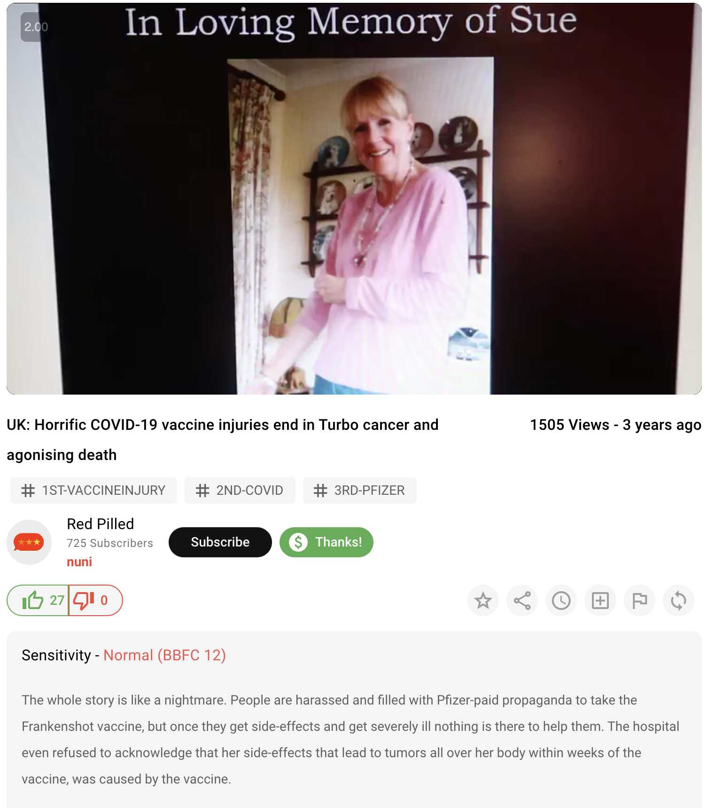
It was an audio-only video that was narrated by an anonymous lady who said that her identity was not important. She sounded a lot like Clare Craig, even though I'm not sure if it's her or not.
Clare Craig's LinkedIn profile says: "I have been a Consultant Pathologist since 2009 and worked on the 100,000 Genomes Project in the cancer team from 2016." [https://www.linkedin.com/in/clare-craig-48b1b71a] So it might have made sense to cast her in the role of someone to present a cancer-related psyop story. Clare Craig is even specifically a cancer pathologist just like Ute Krüger, who was presented as an early expert about turbo cancer in alt media. And another early peddler of the turbo cancer story was Ryan Cole who is also a pathologist. And the figureheads of the German pathology conference were Arne Burkhardt and Walter Lang who are both pathologists.
But anyway, the lady who narrated the video said that her friend Sue died of a rapid cancer on August 26th 2021. She said her friend was 63-year-old Cambridge graduate who "had been a university lecturer and author and a nurse, so she had medical training" (which kind of matches Clare Craig's age and occupation, because she got a master's degree in medicine from Cambridge).
Next the anonymous lady who might have been Clare Craig said:
After the second jab, she immediately suffered with horrendous rashes that just moved all over her body. Something that she had never experienced before and couldn't understand that they were very uncomfortable. And one day they'd be in one part of her body, and they would then move to another part. They wouldn't disappear. They just move around in a way that was very disturbing.
She developed pins and needles in her hands arms, legs, and feet, and lost sensation in them, as in Guillain-Barre syndrome - which I hope I pronounce correctly - which the doctor - the same one that had jabbed her and didn't seem to be at all interested in Sue's medical history - had told her that it wasn't that syndrome, although it actually mimicked it perfectly, and as we all know this is a common reaction.
And then if that wasn't bad enough, her beautiful skin - as you can see in this photograph, she had lovely clear pale skin - it all dried out, and then it began to crack open and this wasn't just in one part of her - this was all over her body, which was extremely distressing.
She still had the rashes, she still had the pins and needles and the numbness. But now she had her skin literally cracking all over her body. The same doctor gave her creams and said it was weird and, that she'd report this to the MHRA yellow card scheme. Whether she ever did that or not will never know.
Sue described it like having broken old elephant's hide all over her body, and the cream she was given did absolutely nothing. It just got worse and worse, it was extremely uncomfortable. And this was along with all the other things that were going on at the same time.
Then her lovely blonde silky hair turned coarse and brittle and started to change in texture and color, which was also distressing. She could hardly recognize herself by this point and didn't want to look at herself. Her nails turned completely white and began to curl inwards. Sue gave me a name for this that she'd been told but I cannot remember what it was. I could only listen to her in horror as she described a whole body going through these dreadful changes - one after the other, one on top of the other, continually, every day something else would happen.
And then as if she wasn't suffering enough, her whole body started to experience agonizing pain. My friend Sue was very brave, very stoic. And yet she would spend her nights on the floor screaming in agony. And still, nothing was done, except for a few blood tests.
Then her body - which was in pain and racked with horrible rashes and numbness and the skin flaking off and cracking open - then she began to swell up with fluid all over her body until she was so bloated she couldn't recognize herself at all.
She felt as if the numbness and the pins and needles had then spread inside her to affect her bowel and bladder, because it became hard to urinate and to defecate because she couldn't feel anything - she couldn't actually push anything out because she'd lost sensation inside her body as well as on the outside, so the extremities of her body - all these symptoms kept persisting. They chased - they moved about - the rashes moved about - the pains might change place, the skin continued to crack, nothing changed. It just got worse and worse, and the agonizing pains were just horrific. It sounded just intolerable, and yet she was not - and in fact the doctor was to Sue's mind just being quite dismissive at this point as if this couldn't possibly be happening, it was so bizarre and so off the scale that it couldn't be happening. So she was still dismissed, until she was so sick and exhausted that she could hardly move. She could not even eat any more or drink hardly, everything tasted disgusting to her. Her mouth felt like it was corrugated, it was so dehydrated.
When Sue finally collapsed in pain and was taken to hospital the next week - this, then, finally after a couple of weeks of this horrific onslaught of symptoms, scans were finally done and her body was found to be attacking itself in every possible way. On her first night in hospital, her liver had a massive bleed and she was saved by a blood transfusion. We nearly lost her then.
And then she said a bit after that Sue died.
Needless to say the symptoms she described do not resemble the later lore about the clinical presentation of turbo cancer. The story seemed a bit fantastical, including the part about how Sue was neglected by the doctors, and how Sue not only got turbo cancer from the vaccine, but also Guillain-Barre syndrome, shingles, and rashes that moved all over her body. It's also suspicious how the story was highly emotionalized and dramatic.
The anonymous lady in the video sounded like she was clearly reading from a script, and at one part of the video she said: "Sorry, I'm referring to my notes because I'm so emotional that I'll just go off on one if I don't." However there were many parts during the video where she didn't finish a sentence or she had to correct herself, so I don't know if the script was written to resemble natural speech, or if she just narrated some parts of the video freely without following an exact script.
The description of the video said that the video was copied from a BitChute channel called "WinterRoses". The original video by WinterRoses was posted on August 28th UTC, which is supposed to have been two days after Sue's death. [https://www.bitchute.com/video/zzLdieJuwu6x/] The WinterRoses channel doesn't have any other videos:
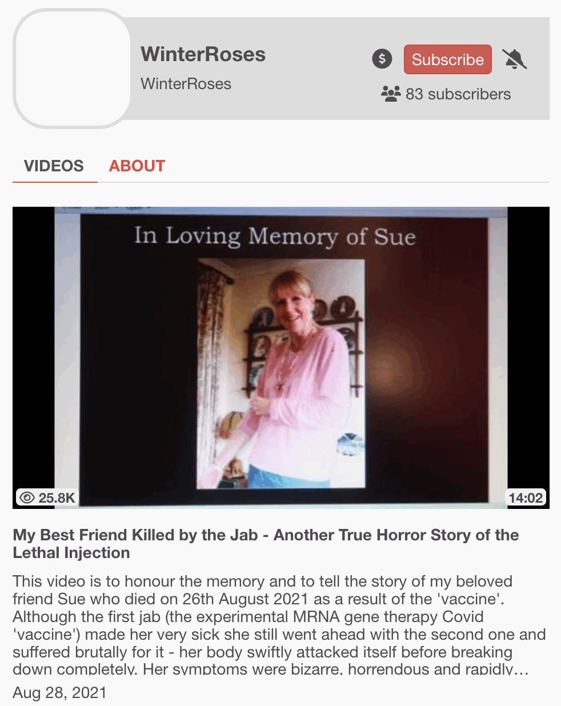
I didn't find any reference to a friend who died of cancer in Clare Craig's book or on her Twitter or Substack. I tried searching for "winterroses" "turbo cancer" and "winterroses" "clare craig" on both Google and Twitter, but there were zero results.
Actually the original video by WinterRoses didn't feature the term turbo cancer anywhere. But the term was only included in the title of a copy of the video that was posted on September 6th UTC by a channel called "Red Pilled". However even September 6th was two weeks before Burkhardt's conference on September 20th UTC.
Added later: Apparently the video by Red Pilled was originally called "Horrific vaccine side-effects end in sudden cancer before agonising death in the UK", so it said "sudden cancer" and not "turbo cancer". [http://web.archive.org/web/20210930052406/https://www.bitchute.com/video/IeUcKnactfU1/] The title of the video was edited some time between November 2021 and December 2022. So as of now, the earliest vaccine-related use of the term "turbo cancer" I have found was in Burkhardt's pathology conference.
The oldest video on BitChute that matched the term "turbo cancer" was posted by a channel called Red Pilled, even though I later found that the word "turbo cancer" was not originally included in the title of the video but the title was edited later. However the channel is still interesting because it mirrored the video by WinterRoses who may have been Clare Craig, so I looked at other videos posted by the channel to evaluate if it was genuine or if it was part of some operation to amplify disinformation by mirroring it across various channels, but currently I consider the latter option to be more plausible.
The oldest video mirrored by Red Pilled is an episode of an anti-Chinese podcast called ADV Podcast. The second-oldest video shows animated plots of COVID statistics that look like plots by Joel Smalley. And the third-oldest video is a documentary by Epoch Times, and the fourth and fifth videos are videos of Mike Yeadon (who not only worked for Pfizer but who also worked under military clearance at Porton Down as a college student): [https://www.bitchute.com/channel/yzyolwscZrp8]
The oldest video on the Red Pilled channel was posted in 2020. It's a copy of an episode of an anti-China podcast called "ADV Podcast", which has now been renamed to "The China Show". The profile picture of the Red Pilled channel features three yellow stars on top of a red pill in colors similar to the flag of China, which is probably supposed to mean that the channel is trying to get people redpilled about how evil China is.
The second-oldest video shows animated plots of COVID statistics that look like plots by Joel Smalley: [https://www.bitchute.com/video/thVSbRT82VBF]
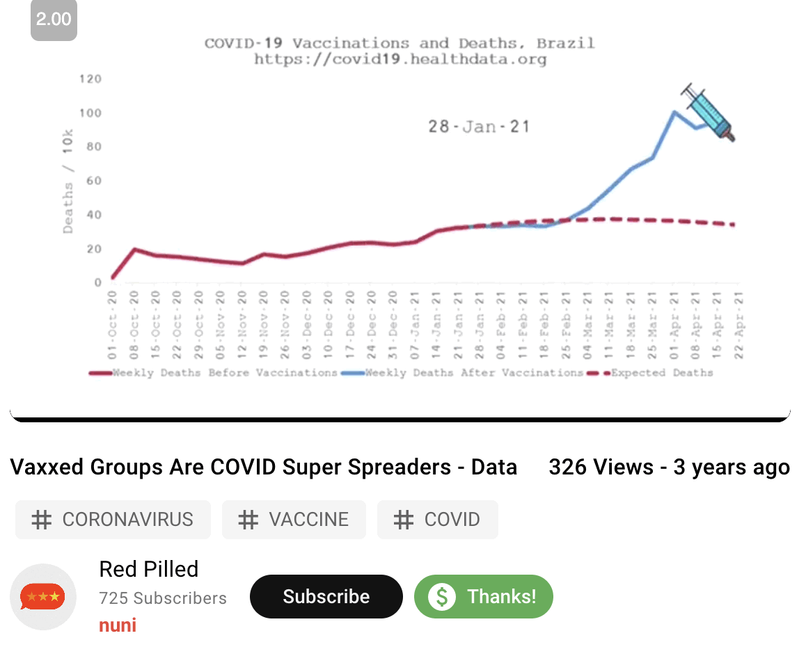
I didn't find the video on Smalley's Substack or Twitter, but he has published similar videos of animated plots himself. [https://metatron.substack.com/p/the-covid-vaccine-saved-millions] Smalley's plots have a similar monospace font where numbers are bolder than alphabetical characters. And they have a similar legend with rounded ends of lines and no margin between the legend lines and text:
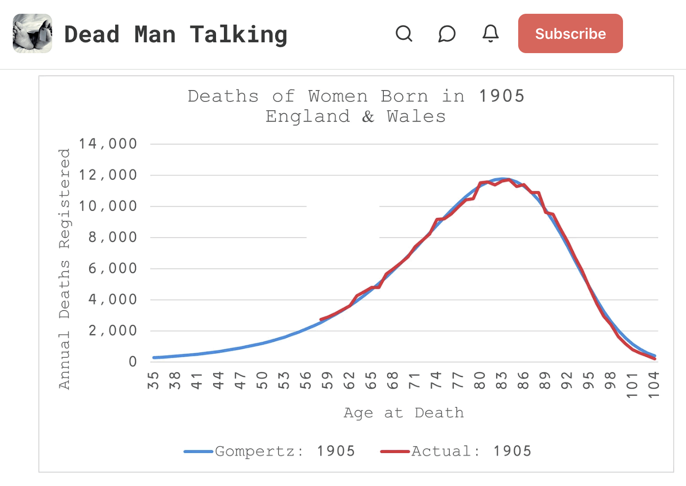
The Red Pilled channel has also mirrored two videos by Norman Fenton (so since the channel has mirrored videos by Fenton and Smalley, then I think it makes it more likely that the anonymous lady in the turbo cancer video was actually Clare Craig):
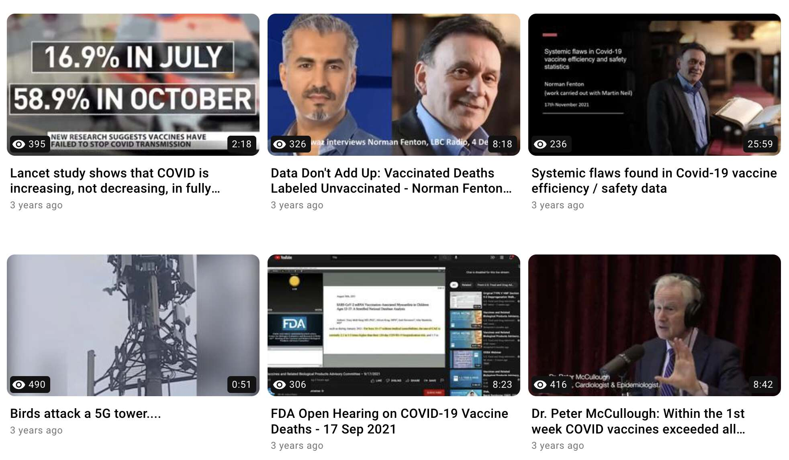
Red Pilled also mirrored videos from 2021 by John O'Looney and another funeral director called "Wesley":

The funeral director Wesley said that there were almost no elderly people dying anymore because they had already died before. [https://www.bitchute.com/video/0QLoXDVmgb3I] But he said that around the time when young people got vaccinated, he had the most funerals he had "ever done in two weeks, and they're all aged 30, 40, no older". However his anecdotal statistics are inconsistent with actual mortality statistics in England, where in May to June 2021 when the highest number of people in their 30s and 40s got vaccinated, only about 4% of all deaths were in ages 30-49.
Wesley also he said there were about ten times more babies dying than usually, so the fridge for babies was full so the babies had to be placed in an adult fridge. (His story about dead babies is reminiscent of the highly emotionally laden story of Sue's turbo cancer. And I bet the same type of people who made fun of babies in incubators ended up falling for his story about fridges full of babies.)
The funeral director Wesley didn't say anything about a new type of white clots. Other funeral directors and embalmers now claim they started seeing a new type of white clots in 2021, but I haven't found a single reference to the clots before January 2022 when Richard Hirschman was interviewed by Jane Ruby. The funeral director Wesley seems to have been later forgotten, because I didn't find any tweets about him posted after 2021. I found only a couple of tweets about him from 2021, but not too unsurprisingly one of them was posted by an account that promoted Miles Guo: [https://x.com/search?q=wesley+funeral+director&f=live, https://x.com/wiGuWZf1EpnmDod/status/1457663137344212995]
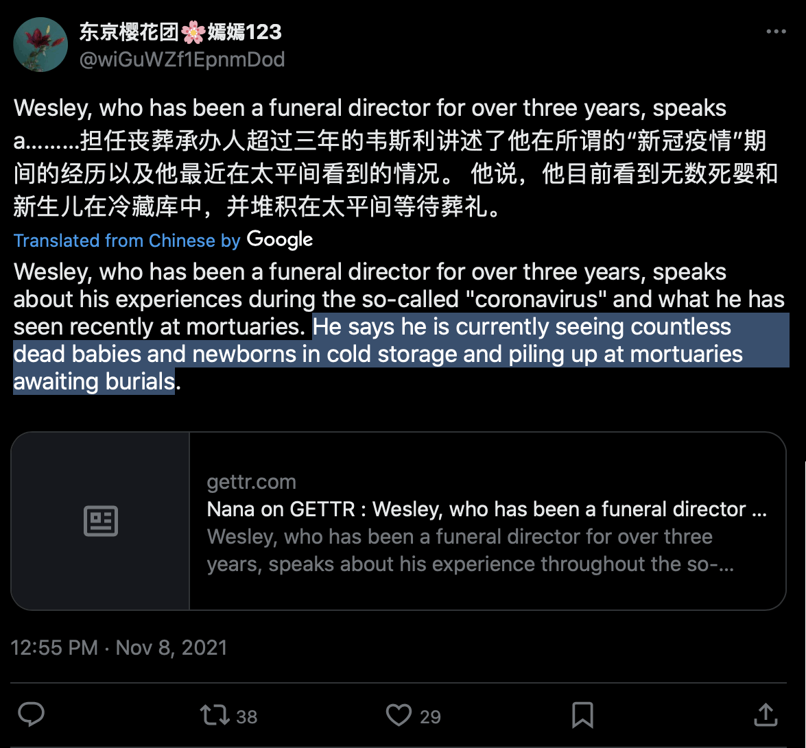
The animated video of Joel Smalley's plots reminded me of this video of Denis Rancourt's plots that went viral in early 2024: [https://x.com/denisrancourt/status/1758503759653585165]
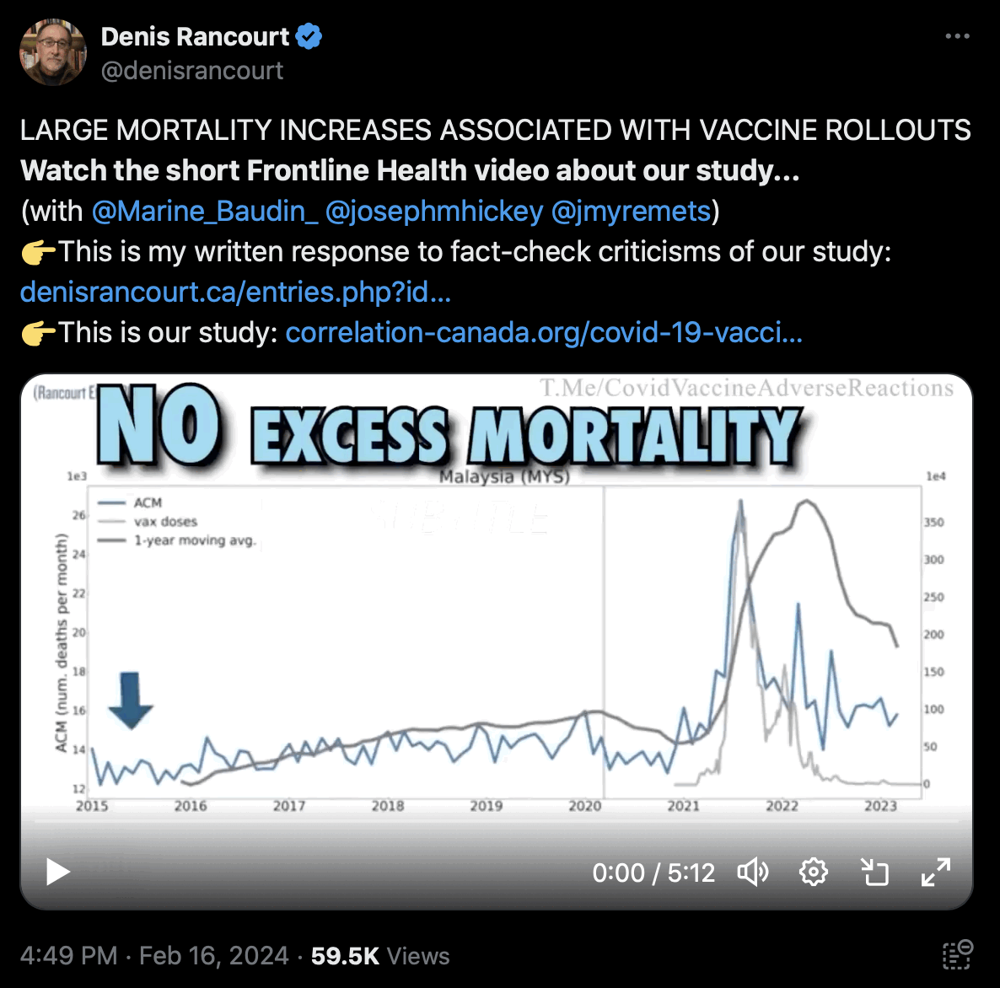
The video of Rancourt's plots was done by Frontline Health, which is a show on Epoch TV hosted by Dan Skorbach. [https://www.theepochtimes.com/epochtv/no-lives-were-saved-by-covid-19-vaccines-canadian-scientists-estimate-5505337] An article from 2013 said that Skorbach had been a practicioner of Falun Gong for five years. [https://en.minghui.org/html/articles/2013/8/28/141725.html] So the connection to Falun Gong is interesting considering that the three oldest videos on the Red Pilled channel consisted of two anti-China videos along with a video of animated COVID statistics similar to Rancourt's video.
Red Pilled also posted a video which consisted of a clip from Burkhardt's pathology conference that was edited together with a clip from November 2021 of analysis by an unnamed German doctor, who claimed that a BioNTech vaccine sample contained two worms that hatched from two eggs, and he said "these worms cause cancer; they can cause severe pain as in rheumatoid diseases, joint pain, or even Alzheimer's if they infest the brain": [https://www.bitchute.com/video/VJibzhqRIZOT, time 7:17; transcript at https://rairfoundation.com/bombshell-german-doctors-find-astonishing-impurities-in-covid-vaccine-video/]
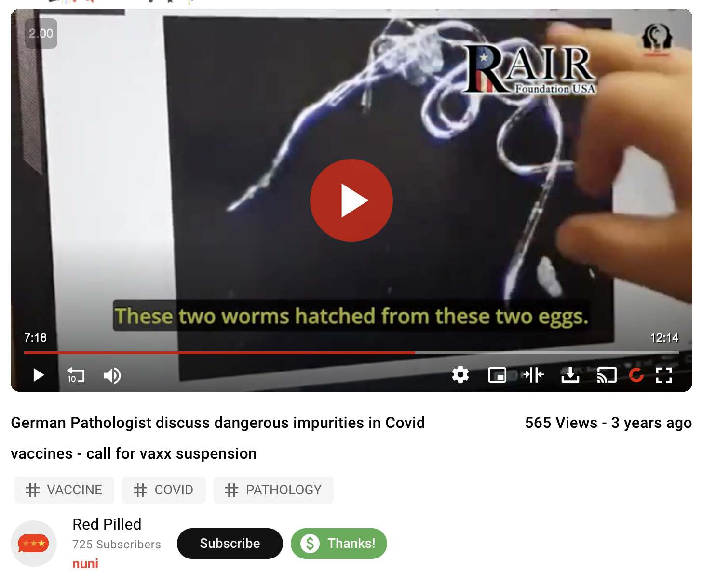
He claimed that this image showed the digestive tract, sexual organs, and tail of another worm:
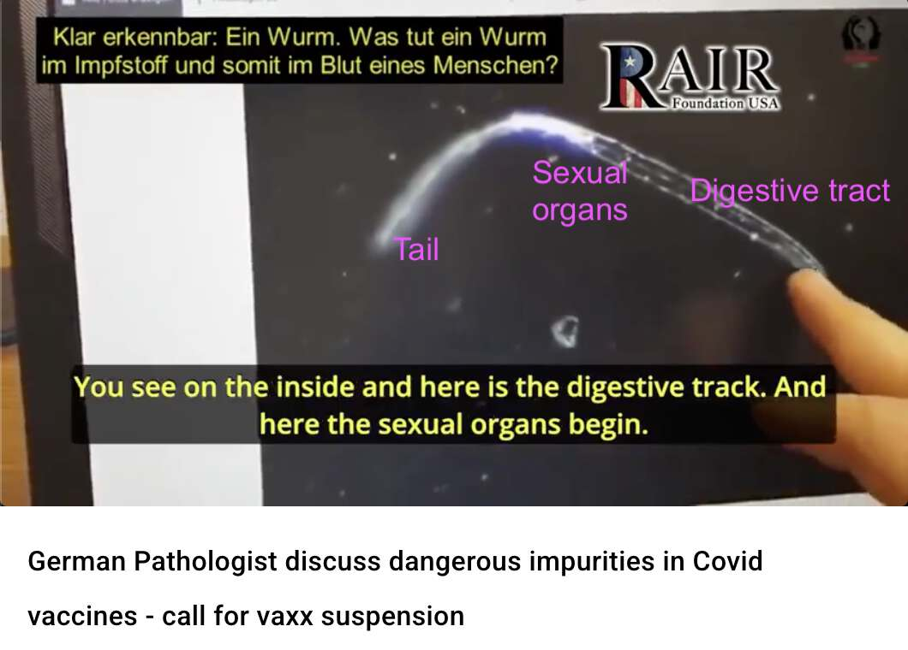
At time 8:41 another guy in the video asked "What size are these worms to be seen with dark-field microscopy?" Then the person who presented the worms said: "The measurement is 40,000; it's set on 40,000 enlargement." And the other guy asked: "40,000 what?" And the person who did the presentation answered: "Nanometers. It says it there. 40,000 nanometers." However a 40,000-fold magnification level doesn't refer to 40,000 nanometers but that objects appear at 40,000 times the normal size. And due to the diffraction limit of light, light microscopes only go up to an approximately 1,000-fold to 1,500-fold magnification level. In an interview with CHD, Ana Maria Mihalcea similarly claimed that her microscope images which showed "nano- and micro-robots" were taken at 4,000-fold magnification: [https://x.com/Kevin_McKernan/status/1846167380247900312]
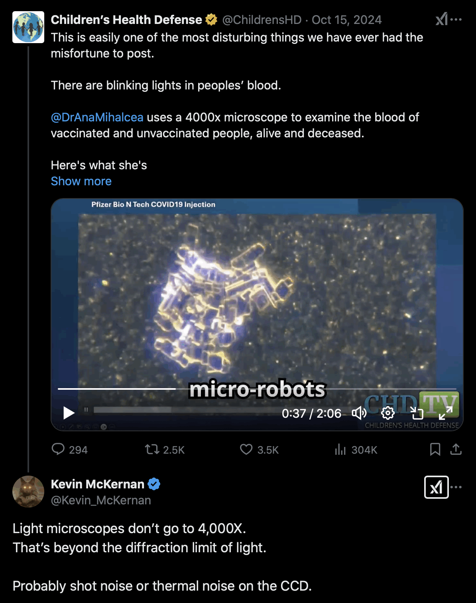
A tweet from 2019 said: "Ivermectin and Fenbendazole seem to ease my Morgellons symptoms the most." [https://x.com/Humanparasites8/status/1121415232071581696]
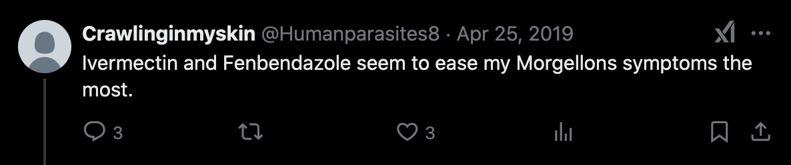
A forum post from 2016 said: "I've also read that a lot of people who are suffering with morgellons have had some huge success with fenbendazole." [https://www.skinpick.com/comment/16074] A tweet from 2021 said: "I was suffering with an unidentified disease call MORGELLONS. Doctors thought we were all crazy. I used cattle wormer - FENBENDAZOLE FOR 3 YEARS and was pretty much cured! It was believed to be a confection of Lyme Disease!" [https://x.com/WETRIPP/status/1429176109745139715]
In 2021 Peter McCullough, Raphael Stricker, and Harvey Risch published a paper titled "Role of hydroxychloroquine in multidrug treatment of COVID-19". [https://www.imrpress.com/journal/RCM/22/3/10.31083/j.rcm2203063/htm] McCullough and Risch are two of six people on the so-called "Chief Medical Board" of The Wellness Company. [https://www.twc.health/pages/leadership] In 2024 Raphael Stricker was also one of the authors of a phony paper by McCullough Foundation about cardiac arrest data in Seattle. [statistic2.html#McCullough_Foundation_Paper_about_cardiac_arrests_in_King_County_EMS_data]
Before COVID Raphael Stricker published at least 13 papers about Morgellons disease, and he was possibly the main person responsible for popularizing the Morgellons hoax. [https://www.researchgate.net/profile/Raphael-Stricker] One of Stricker's papers featured these photos of Morgellons fibers: [https://www.researchgate.net/publication/313180079_Morgellons_Disease_A_Chemical_and_Light_Microscopic_Study]
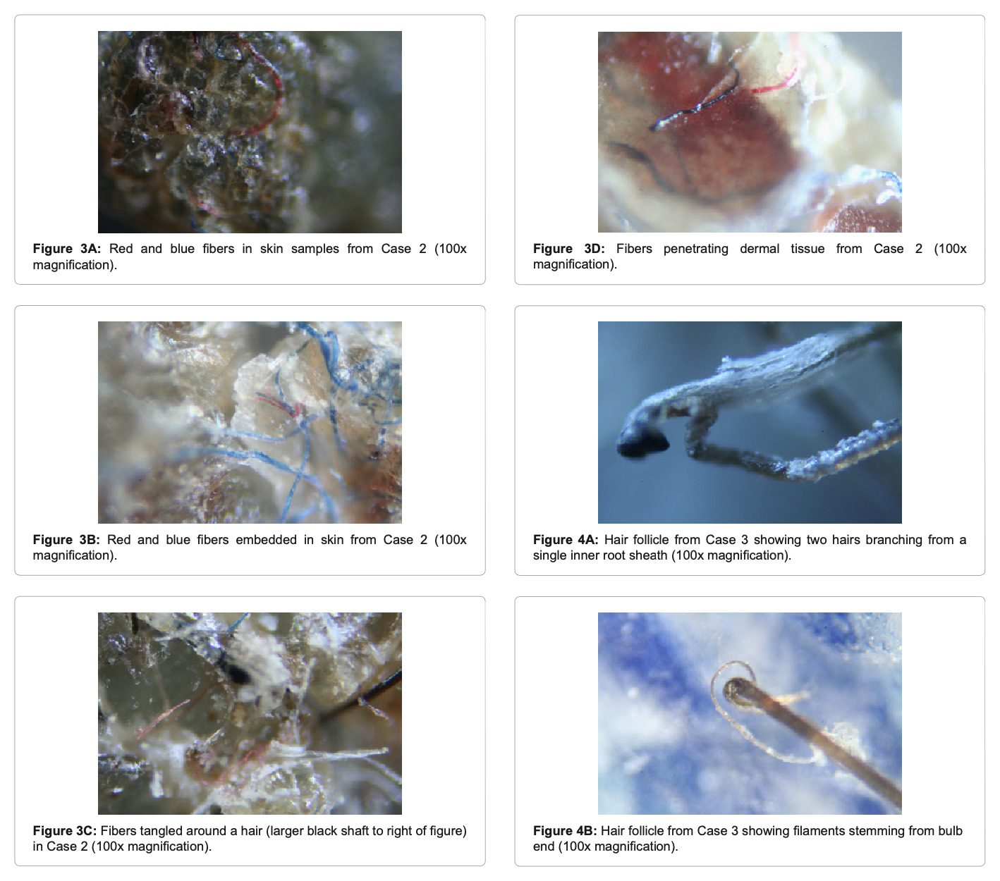
The name Morgellons disease was coined in 2002 by Mary Leitao to explain her 3-year-old son's skin problem, because she looked at her son's skin under a microscope and saw fibers embedded in his skin lesions, which she decided was a symptom of a novel disease. In 2004 she created a non-profit called Morgellons Research Foundation, whose two medical advisory board members were Raphael Stricker and Victoria Savely. In 2006 Stricker coauthored an early paper about Morgellons disease with Leitao and Savely. [https://www.morgellons-disease.org/reading/AJCD%202006%20Savely.pdf]
In 2019 the California Medical Board issued a complaint against Raphael Stricker, which said that Stricker had prescribed ivermectin as a treatment for Morgellons disease without obtaining informed consent: [https://lymescience.org/rogues/Raphael-Stricker/Raphael-Stricker-accusation-2019.pdf]
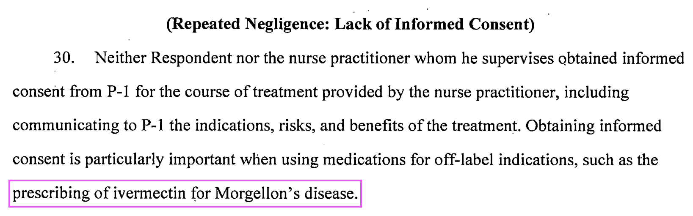
An article by Forbes said: "In 1990 Stricker was forced out of UC, San Francisco after the school claimed he falsified data in what had been a seminal AIDS study. Before he discovered Lyme he spent two years as associate medical director at a penis enlargement clinic." [https://forbes.com/forbes/2007/0312/096.html?sh=6f92216476c6] In 1993 the Office of Research Integrity of the NIH issued a notice which said: "An investigation conducted by the University found that Dr. Stricker falsified data for a manuscript and a PHS-supported publication reporting research on AIDS. In the manuscript, Dr. Stricker selectively suppressed data that did not support his hypothesis, and reported consistently positive data whereas only one of four experiments had produced positive results. In the publication, Dr. Stricker reported that an antibody was found in 29 of 30 homosexuals, but not found in non-homosexuals. However, Dr. Stricker's control data, which he suppressed, showed the antibody in 33 of 65 non-homosexuals. The falsified data was used as the basis for a grant application to the National Institutes of Health." [https://grants.nih.gov/grants/guide/notice-files/not93-177.html]
Someone wrote this about Stricker's business partner at the penis enlargement clinic: "Dr Rodney Barron from thebarroncenters.com, a urologist that performs male penile enhancement surgery, deceived, traumatized and scarred me for life. If I can help even one person to avoid the pain and suffering I endured at the hands of this guy, it will be worth it. I endured a traumatic and painful surgical procedure only to have no results whatsoever, and hideous thick red scars around my genitals. This criminal butchered me and many other patients as I later learned when I started researching, as his nickname 'Barron the Butcher' is widely known in male enhancement forums." [https://www.ripoffreport.com/reports/dr-rodney-barron/beverly-hills-california-90210/dr-rodney-barron-rodney-stephens-barron-the-barron-centers-thebarroncenterscom-dr-ro-792218] A user on a penis enlargement forum wrote: "I had girth enhancement surgery with Barron back in 2001. I immediately developed a severe necrotic issue and lost about 1/4 of my penis." [https://phalloboards.websitetoolbox.com/post/r-s-barron-m-d-los-angeles-6513622] In 2010 Barron was arrested for Medicare fraud, because another clinic he worked for was running a scheme where they drove around LA looking for homeless people who were covered by Medicare or Medicaid, who were then driven to their clinic and paid in exchange to being subjected to spurious medical procedures. [https://www.latimes.com/archives/la-xpm-2010-oct-30-la-me-doctors-20101030-story.html]
It's interesting that Stricker coauthored a paper with two members of the The Wellness Company's Chief Medical Board, because the turbo cancer William Makis promotes ivermectin and fenbendazole as a treatment for turbo cancer, but he used to be a member of the so-called "Chief Medical and Scientific Board" of the Canadian branch of TWC. [https://web.archive.org/web/20230909165713/https://twccanada.health/] The Twitter user oldsmokingdragon wrote: "Makis blocked me for pointing out he makes 45 to 57 thousand a month, yes you read that a right, by paywalling cancer info. I recently lost a family member who decided to do Ivm/fenben for stage 2 cancer. It proliferated & went into the lymph nodes & brain." [https://x.com/oldsmokindragon/status/1869922548823023667] By January 2025 Makis gained a purple checkmark next to his Substack name, which meant that he had at least 10,000 paid subscribers. [https://x.com/canceledmouse/status/1883352026803040301]
Steve Outtrim wrote: "Phoenix Enigma's girlfriend Alicia calls herself 'The Sicilian Witch'. She's the last person known to have seen Isaac Kappy alive, other than a brief wave goodbye as he sped off from his landlord The Christmas Lady - who was promoting Ivermectin as a cure for Morgellons before COVID-19 was a thing." [https://burners.me/2020/06/02/strange-connections-between-bill-gates-jeffrey-epstein-jason-goodman-isaac-kappy/] In 2020 Phoenix Enigma published a blog post which promoted Jerome Corsi's website SpeakWithAnMD.com, which offered prescriptions of ivermectin and HCQ via telemedicine consultation by "AFLDS-trained and licensed physicians". [https://thephoenixenigma.com/covid-truth-awareness/]
In 2011 a journal about psychosomatics published a letter titled "Psychosis, Ivermectin Toxicity, and 'Morgellons Disease'". It described a case of a man who had earlier thought he was poisoned by the Japanese mafia, but who then learned about Morgellons disease from the Internet, so he got a prescription for ivermectin through a telehealth consultation and he ended up developing ivermectin toxicity: [https://www.sciencedirect.com/science/article/pii/S0033318211000521]
Mr. A, a 46-year-old Caucasian man, presented to the emergency room complaining of infestation with parasites, evidenced by cutaneous sensations of crawling and itching, and seeing "cocoons" buried in his skin. These symptoms began 2 years earlier along with delusions of being poisoned by the Japanese Mafia. Evaluation by a primary care physician revealed no signs of infection. He was referred to psychiatry, but never followed-up. He instead gathered information from the internet, diagnosed himself with MD, and paid for telephonic consultation with a MD "expert" who prescribed the patient antibiotics and later recommended ivermectin, which he purchased in bulk from an on-line veterinary supplier. Mr. A ingested ivermectin daily in unknown but escalating quantities as cutaneous sensations waxed and waned.
On exam, he displayed slow speech with prolonged latency, an intention tremor, and ataxia. He was disorganized and sometimes incoherent, but denied prior medical or psychiatric history, though urine toxicology screening was positive for cannabinoids. Skin examination was unremarkable. He was admitted with a diagnosis of delirium secondary to ivermectin toxicity that resolved over the course of 2 days with supportive therapy. Due to persistent paranoia and delusions of infestation, olanzapine 10 mg/d was started. Although reluctant to forego ivermectin and take antipsychotic medication, Mr. A consented, and after 1 week reported reduced skin sensations and delusional conviction. He was discharged after 10 days with a diagnosis of delusional disorder.
This case adds to an existing literature on the self-diagnosis of MD facilitated by the internet, where numerous websites provide support, information, and advice to sufferers of this controversial condition. The role of the internet in the formation and maintenance of delusional thinking has led some authors to label MD an "internet meme" and "folie a internet." Our case highlights the great lengths that patients may go for symptom relief, and the potential harm associated with unmonitored "e-treatment" from purported experts. This is also the first known report of a patient whose beliefs about having MD occurred with other clearly psychotic delusions, suggesting a common etiology or perhaps a greater susceptibility of individuals with psychosis to "internet memes."
Lee Merritt says that ivermectin cures cancer in vaccinated people, because vaccines contain parasite eggs, parasites cause cancer, and ivermectin kills parasites. Lee Merritt's parasite treatment protocol consists of fenbendazole, ivermectin, and nitazoxanide. [https://drleemerritt.com/media/PARASITES_and_the_Elimination_Protocol_I_did_for_myself_Rev_1_FiFjhRw.pdf] The description of a Rumble video by Lee Merritt said: "She shows a short German video about Cancer as a parasitical infection. Questions Dr Lee Merritt asked herself: Why are cancers bursting out after the vax? Why does autoimmune disease respond to anti parasitical? Why do THEY (Fauci & others) hate antiparasiticals? Why can't we find mRNA's in these vaxxines? 18 labs around the country can NOT find mRNA's inside the vaxxines. Parasites & cancer under the microscope look identical. Shows Karen Kingstons work where they couldn't make a biological bioweapon work so used a synthetic nanoparticle smart hydrogel which IS the real spike protein. With this stuff in the body and 5G turned on it binds with the ACE-2 pathway and people get sick. Dose the population & control disease outbreak with external wavelength (5G). The best thing we can do right now is take the antiparasiticals. Mother parasite laying eggs. She gives off a hormone that keep the eggs unhatched but if she dies the eggs hatch." [https://rumble.com/v1pd6x9-dr-lee-merritt-parasite-protocol-the-new-parasite-paradigm-october-20th-202.html] Lee Merritt has developed a 4-part vaccine remorse protocol to heal damage caused by vaccination, which consists of nicotine gum, ivermectin to get rid of the parasites in vaccines, drinking your own piss, and drinking bleach (and an optional addition to her protocol is listening to 528 Hz tuning forks). [https://drleemerritt.com/media/vaxxremorse.pdf]
The oldest videos I found on Odysee that matched the term "turbo cancer" was a clip from Arne Burkhardt's pathology conference uploaded by KLA.tv. [https://odysee.com/$/search?q=%22turbo+cancer%22] The same video by KLA.tv was the oldest search result that matched the term "turbo cancer" at BitChute (if you exclude one video where the title of the video had been edited later to add the phrase "turbo cancer").
The video had English dubs which I believe were produced by KLA.tv, because KLA.tv has also published their original content with similar English dubs.
KLA.tv is a conspiracy video website that is ran by members of a cult called "Organische Christus-Generation" (OCG). OCG's leader Ivo Sasek said that the children of OCG members also help with running KLA.tv but the "children are hardly aware of the content of the conspiracy program they helped to create". [https://www.phoenix.de/sendungen/dokumentationen/die-verschwoerungs-sekte-a-755374.html] In 2023 when I first did research on KLA.tv, the featured video on the front page of their website was a film about electroshock therapy by the Scientologist organization CCHR (Citizens Commission on Human Rights). [https://www.kla.tv/en] In 2025 the featured video discussed an article by Epoch Times about aluminum in vaccines.
Ivo Sasek also founded an organization called "Anti-Zensur-Koalition" (AZK). [https://de.wikipedia.org/wiki/Ivo_Sasek] In the first AZK conference in 2009, Sasek did a presentation about the German New Medicine movement. One speaker at the 2009 AZK conference was Jürg Stettler, who at the time was the president of the Swiss branch of the Church of Scientology and the press spokesman for the German branch. His talk was followed by a screening of CCHR's film "Making a Killing: The Untold Story of Psychotropic Drugging", which features Rima Laibow and Jim Marrs. [https://vimeo.com/channels/809974/videos] CCHR is an anti-psychiatry organization ran by the Church of Scientology.
Rima Laibow and General Albert Stubblebine were also speakers at the 2009 AZK conference. [https://www.allmystery.de/themen/pr57797] In 1989 Rima Laibow founded a center called TREAT (Treatment and Research of Experienced Anomalous Trauma), which was focused on psychiatric treatment of alien abduction victims. A German Wiki said that that Laibow "regularly appears at events organized by the Scientology offshoots Youth for Human Rights International and Citizens Commission on Human Rights". [https://www.psiram.com/de/index.php/Rima_Laibow] But I don't know if the wiki was correct, because when I asked Laibow if she was somehow involved with Youth for Human Rights International, she told me that her involvement with the organization was "totally mythical since I never heard of the organization before I read your comment". [https://roundingtheearth.substack.com/p/what-did-mike-adams-know-and-when/comment/44510266]
Another speaker in the 2009 AZK conference was Jane Bürgermeister who did a presentation about H5N1 vaccines. One of Bürgermeister's most viewed videos is an interview about H5N1 vaccines she did with Bill Ryan from Project Avalon in 2010. But Bill Ryan is a Free Zone Scientologist, and he wrote that with the help of Scientology "I opened up my past lives, cleared the backlog of charge from this-lifetime upsets, and started to develop my suppressed abilities." [https://projectavalon.net/forum4/showthread.php?59276-Q-and-A-about-Ron-Hubbard-Bill-Robertson-Scientology-the-Free-Zone-and-Ron-s-Org] He also wrote: "The e-meter is a tool, like a pendulum but far more exact, that assists the auditor in locating areas of 'available' charge. In itself it does nothing. The meter is not even necessary, but it does help the auditor to locate 'stuff' more precisely." And he wrote: "As one progresses, cleans more and more layers of charge off, and rehabilitates lost abilities, one acquires tools (which in other situations might be called 'white-magical' or 'good-shamanic') which enable one to assist others remotely at a distance."
The speakers at the 2009 AZK conference also included Alexander Benesch and Nicolas Hofer, who ran a website called infokrieg.tv which was the German offshoot of InfoWars. [https://www.allmystery.de/themen/pr57797] They published articles by InfoWars translated to German, and they sold DVDs by Alex Jones translated to German. Hofer did a presentation about a film by the German Scientologist Michael Hinz who is also known as Michael Kent. [https://www.psiram.com/de/index.php?title=Recentr]
Another speaker at the AZK conference was Hans Tolzin who spoke about the 2009 swine flu virus. Tolzin was at the time a former Moonie, and in a forum post in 1998 he wrote that he had been a member of the Unification Church for 20 years. [https://www.allmystery.de/themen/pr57797] Hans Tolzin writes for the magazine of the German Scientologist Michael Kent, whose publishing house distributes Hubbard's books in German. [https://www.psiram.com/de/index.php/Michael_Hinz] As of 2024 Tolzin and Kent were working on a film about German New Medicine, where Kent was the producer and writer of the film and Tolzin was responsible for fundraising, distribution, and PR. [https://besser-leben-film.de/das_neue_filmprojekt] Their team previously published a film about how the H5N1 virus was fake. [https://besser-leben-film.de/virus] Kent sells a book about how viruses don't exist, which consists of 32 articles that have been published in his magazine over the years and that were written by people like himself and Hans Tolzin. [https://www.mwbl.de/artikel/virenmaerchen-chronologie-der-fake-seuchen] Tolzin has also ran an anti-vaccination website called impfkritik.de for over 20 years. In 2020 he issued a reward of 100,000 euros for someone who could prove the existence of SARS-CoV-2. [https://impfkritik.de/upload/Wurzel-Coronawette.pdf]
In 2010 Alexander Benesch from InfoKrieg was a speaker at a conference in the US that was organized by Rima Laibow and Albert Stubblebine. [http://web.archive.org/web/20100117133225/https://www.prweb.com/releases/2009/12/prweb3387444.htm] Stubblebine was the commanding general of the U.S. Army Intelligence and Security Command, and he was also the head of the US Army's remote viewing program (but many of the stars of the remote viewing program were Scientologists, including Ingo Swann, Russel Targ, Hal Puthoff, Pat Price, and Edwin May). [https://books.google.com/books?id=8lgHtauc5R4C&pg=PA113] One of the headline speakers at Laibow and Stubblebine's conference was Kevin Trudeau, who wrote that he has studied various religions but that "I happen to think for myself, personally, that Scientology auditing, as well as the courses that they offer, have been the most quantifiable in terms of the benefits that I received." [http://www.thesmokinggun.com/file/kevin-trudeau-memos?page=11] Trudeau's wife said that her prenuptial agreement with Trudeau "obligated her to reach a certain level in Scientology, which Trudeau has dabbled in over the years". [https://www.businessinsider.com/kevin-trudeau-interview-2014-12]
In 2020 hackers published some of Ivo Sasek's emails with Jürg Stettler who is the leader of Scientology in Switzerland. The emails showed that Stettler invited Sasek to visit the Scientology studios in Los Angeles, Settler asked Sasek to do a video at Kla.TV about a Scientologist book, and Sasek's daughter submitted her film to Scientology Media Productions. [https://rentry.co/225699-ocgscientology]
In August 2021 the BitChute channel WinterRoses published an audio-only video where an anonymous lady told a story about how her friend had died of fast-acting cancer soon after vaccination. She sounded just like Clare Craig, but if the video was actually narrated by Clare Craig then I think it greatly increases the likelihood that she is controlled opposition, because the story in the video seemed completely fake.
I have also been suspicious of her coauthors including Norman Fenton and Jonathan Engler, so I copied some of my notes about them here even though it's not directly related to the topic of turbo cancer.
In a tweet in 2024 Fenton wrote: "Between 2016 and 2022, I attended many research seminars in the UK on using AI and Machine Learning to 'combat misinformation'. The example of Hunter Biden's laptop was invariably used as a key 'learning' example so algorithms classified it as 'misinformation', 'Russian propaganda', 'Trump lies'. Moreover, anybody pushing that story was classified as a 'spreader of misinformation', 'conspiracy theorist' etc. In fact, most of the common 'training' examples that were used - many of which were based on things Trump supposedly said, as well as about Covid - turned out to be true. So an enormous amount of research was (and is still) spent on developing 'clever' algorithms which simply censor the truth online." [https://x.com/profnfenton/status/1829137988355281114] The seminars he described sound like they might have been organized by some organization connected to intelligence or mainstream media. Did he also attend seminars on how to produce disinformation in order to keep inconvenient information buried?
Fenton is a professor emeritus at the Queen Mary University of London, which is located about 3 km away from the City of London and about 10 km away from the headquarters of MI6. It's not very damning information by itself, but the London area is the UK equivalent of the DC area where the headquarters of various intelligence agencies are located, so people who live in the London area might be more likely to have intelligence connections than people who live in more remote regions of the UK. Clare Craig and Jonathan Engler are also based in the London area according to their LinkedIn profiles.
In 2015 BBC released a mainstream documentary about climate change which was presented by Norman Fenton, Hannah Fry, and some third guy: [https://www.bbc.co.uk/programmes/p02jsdrk]
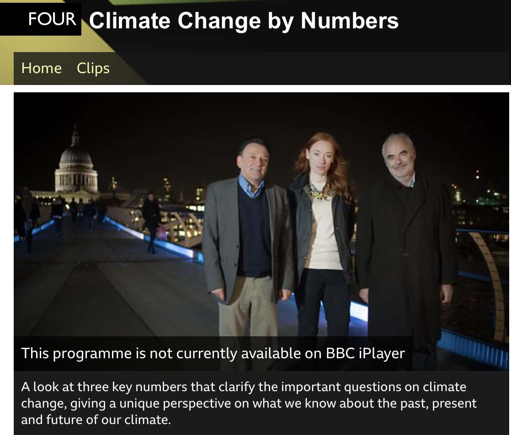
In 2022 Hannah Fry hosted a BBC documentary which criticized anti-vaxxers: [https://www.bbc.co.uk/programmes/m0019g27]
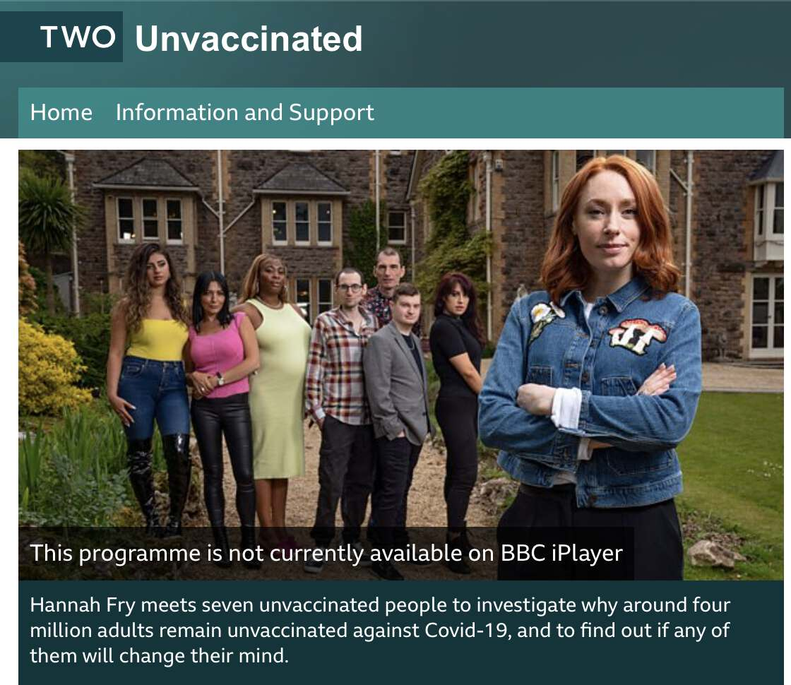
In 2018 BBC released a documentary that starred Hannah Fry titled "Contagion! The BBC Four Pandemic": [https://www.bbc.co.uk/mediacentre/proginfo/2018/12/contagion-pandemic]
The groundbreaking BBC Four experiment uses app technology to 'infect' users whilst tracking their movements and social interactions over 24 hours. The information collected from the app could inform public health policy and help save lives during the next pandemic. But will Hannah persuade enough people nationwide to download it? If she does, this will allow a team of mathematicians from the University of Cambridge to create a simulation of how a deadly flu virus could spread across the UK, predicting how many of us will be infected - and how many might die.
Whilst Hannah masterminds the experiment and adopts the role of Patient Zero - walking the streets of Haslemere in Surrey to launch the outbreak - Javid finds out why flu is such a danger to society. He meets the researchers trying to discover what makes some people more contagious than others and visits a factory that will produce vaccine when the next pandemic virus emerges.
In the BBC documentary Hannah Fry launched a fictional pandemic in the borough of Haslemere, which in February 2020 was reported to be the location of the first known COVID infection with a UK origin (if cases in people who were infected outside the UK and brought the virus to the UK are excluded). [https://www.bbc.com/news/uk-51683428] It might of course be a coincidence, but on the other hand the borough of Haslemere has a population of only about 20,000.
In 2025 Hannah Fry joined Cambridge as a "Professor of the Public Understanding of Mathematics", but before it she was an associate professor at another college in London. [https://www.cam.ac.uk/research/news/hannah-fry-joins-cambridge-as-professor-of-the-public-understanding-of-mathematics] Wikipedia says that Fry's work "has included studies of patterns of human behaviour, such as interpersonal relationships and dating, and how mathematics can apply to them". But before COVID, Fenton and Neil also published popularized articles about Bayesian analysis applied to topics like soccer, and they had a blog written for a popular audience. So both Fenton and Fry had an appropriate background to present information about COVID to a lay audience, even though they may have been cast to play roles on opposite sides of the debate (but that is currently only speculation and I don't yet have good evidence it was actually the case).
In 2019 Fenton also published a review of a popular science book by Hannah Fry: [https://www.researchgate.net/publication/331812193, https://probabilityandlaw.blogspot.com/2019/03/hannah-frys-hello-world-and-example-of.html]
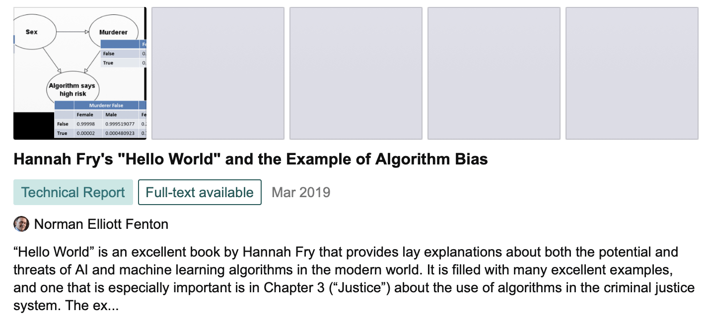
It's also suspicious of how many of Fenton and Neil's coauthors are Jews. In one their papers the authors consisted of Martin Neil, Norman Fenton, Joel Smalley, Clare Craig, Josh Guetzkow, Scott McLachlan, Jonathan Engler, and Jessica Rose. [https://www.researchgate.net/publication/356756711_Latest_statistics_on_England_mortality_data_suggest_systematic_mis-categorisation_of_vaccine_status_and_uncertain_effectiveness_of_Covid-19_vaccination] Normal Fenton was born Norman Finkelstein and he is the son of a Polish Jew. [https://www.normanfenton.com/post/israel-and-the-freedom-movement-a-personal-statement-by-norman-fenton] Jonathan Engler is also a Jew. [https://x.com/jengleruk/status/1432008026106515461] Jonathan Engler's son Harrison Engler is the "Mazkir (National Director) of Habonim Dror, the leading left-wing Jewish Zionist youth movement". [https://blogs.timesofisrael.com/im-anti-occupation-because-im-a-zionist-not-despite-it/, https://www.linkedin.com/posts/harrison-engler-35a724115_looking-forward-to-starting-at-field-court-activity-6945329109203873792-lt9m/] Guetzkow is a Jew who lives in Israel. Jessica Rose lives in Israel even though I'm not 100% sure if she's a Jew. I'm not sure about Joel Smalley either, but the subdomain of his blog is "metatron" and his username at Gettr is "themetatron", but Metatron is an angel that appears in the Talmud but not the Old Testament. And Joel Smalley is also very dark-skinned for an ethnic Brit, and he quoted a Hebrew tweet and posted a tweet in Hebrew. [https://x.com/RealJoelSmalley/status/1409922949369503753, https://x.com/RealJoelSmalley/status/1427577495365246990]